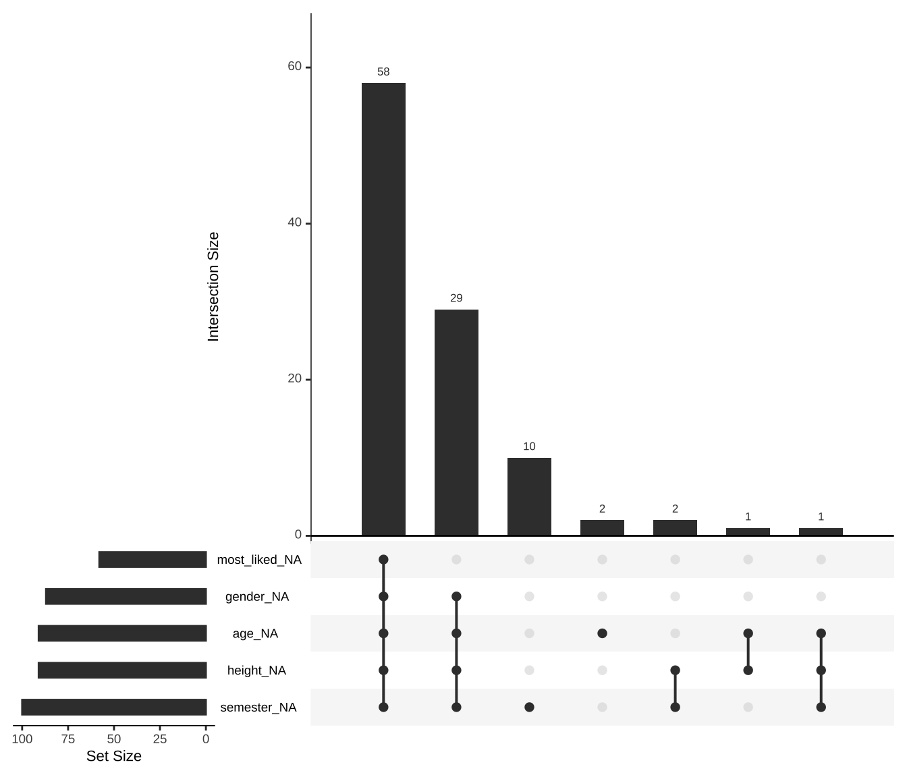
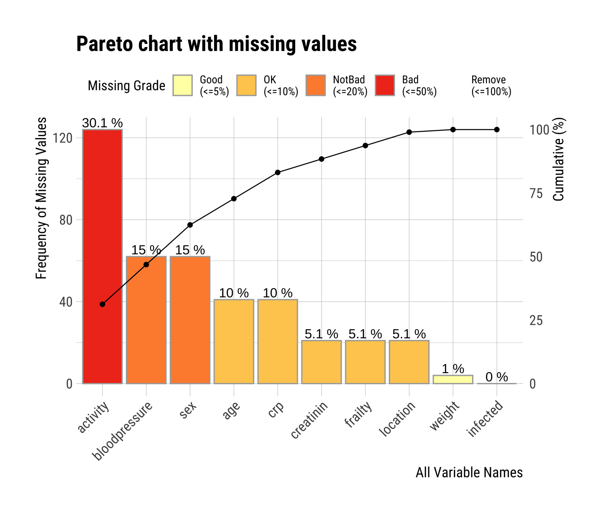
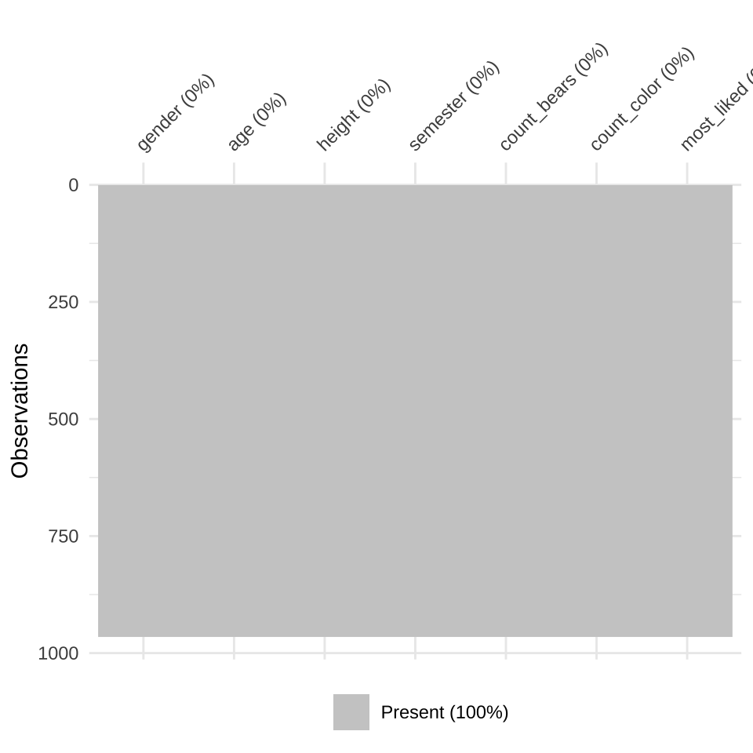
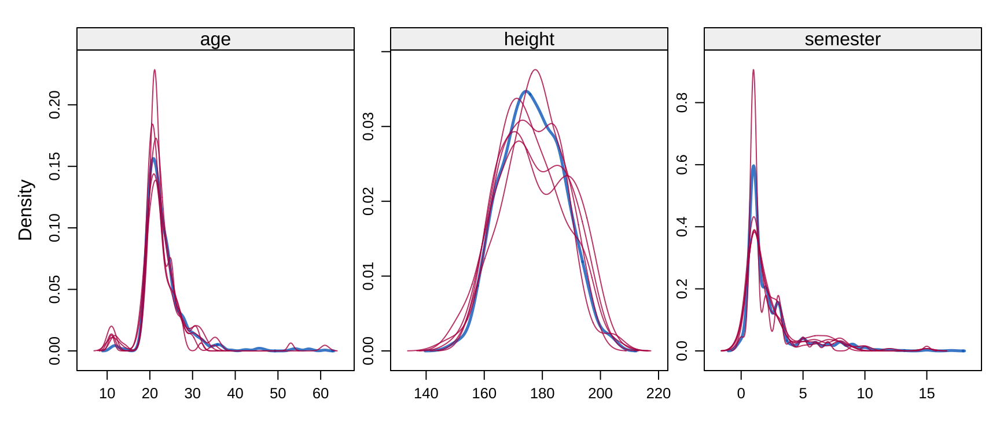
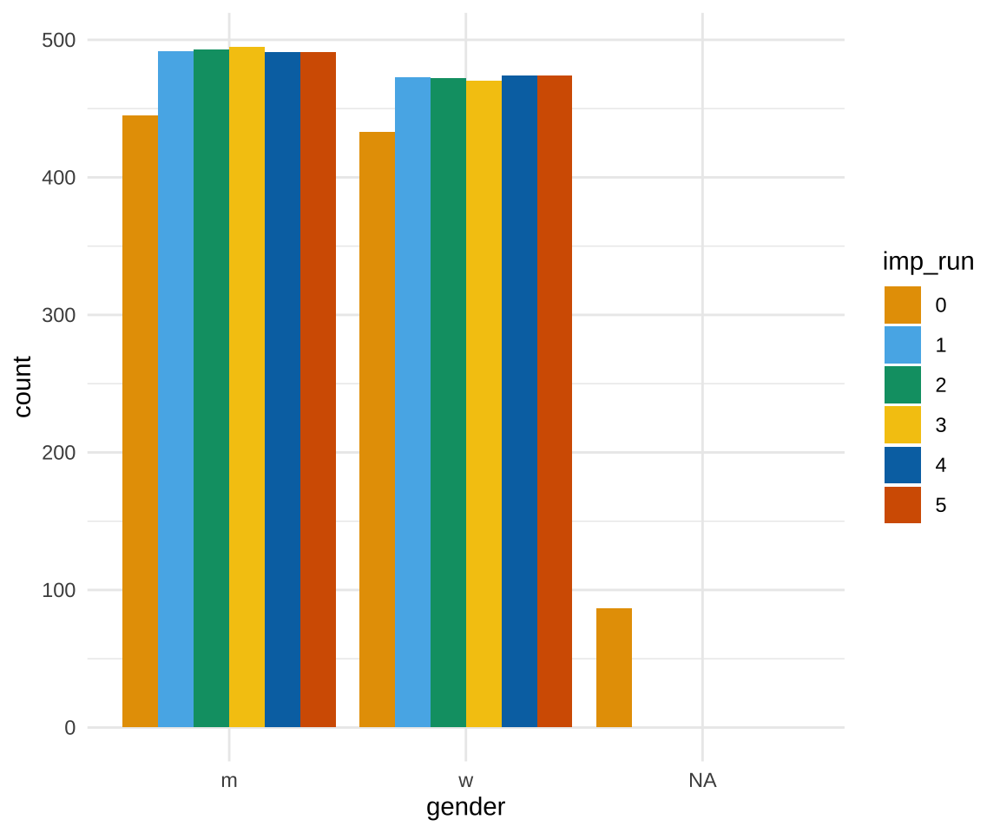
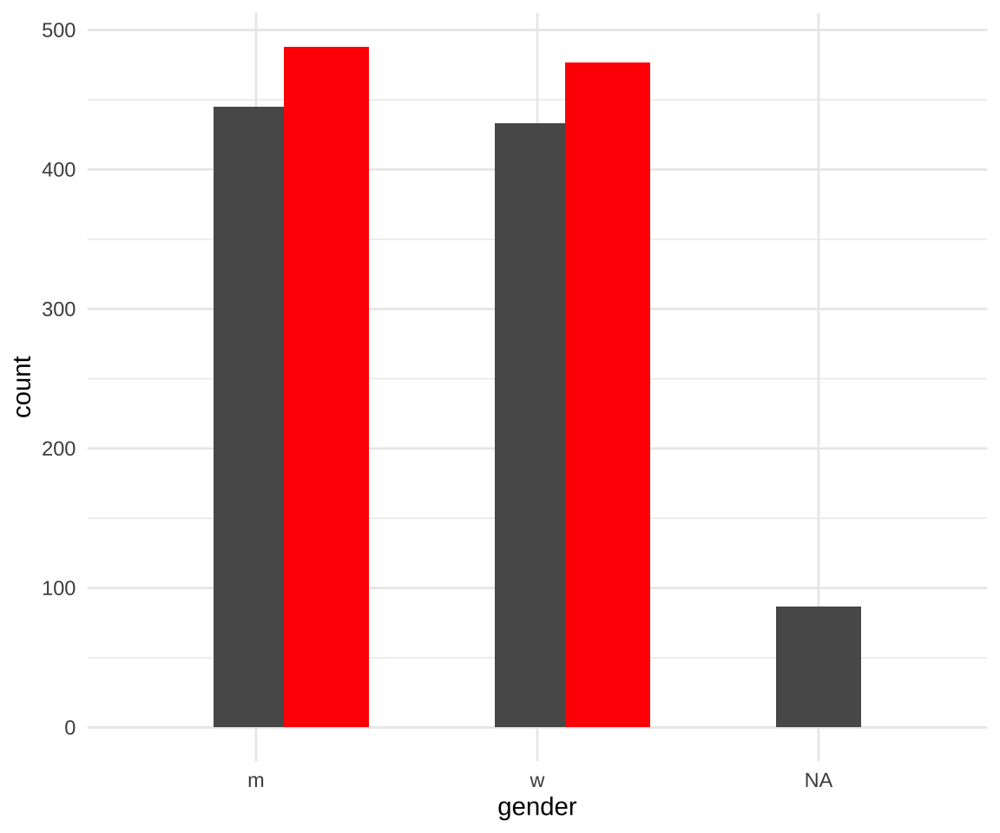

37 Imputation fehlender Werte
Version vom November 02, 2022 um 12:02:15
NA (eng. not availabe) bezeichnet.Wann brauchen wir eigentlich die Imputation (deu. Ersetzung) von fehlenden Werten in unseren Daten? Zum einen brauchen wir die Imputation von fehlenden Werten, wenn wir eine multiple lineare Regression rechnen wollen. Wenn wir einen fehlenden Wert in einer Spalte haben, so fällt diese Beobachtung aus dem gesamten Modell heraus. Das heist, dass wir Fallzahl verlieren sobald wir fehlende Werte in den Daten haben. Tritt dies in einem geplanten Experiment auf? Das kommt darauf an. Wenn du selber die Daten erhebst, dann ist es eher unwahrscheinlich, du wirst vermutlich darauf achten möglichst alle Daten zu erheben. Meistens treten fehlende Werte bei sehr großen Datensätzen auf, die aus externen Quellen kommen. Werden diese Daten dann kombiniert, sieht die Fallzahl beeindruckend aus, aber wenn die Beobachtungen mit mindestens einem fehlenden Wert gelöscht werden, sind die Fallzahlen wieder ganz klein.
select() die einzelnen Datensätze zusammenbaust, die du imputieren willst.Zum anderen imputieren wir auch Datensätze, die wir später im Rahmen des maschinellen Lernen im ?sec-class-basic benutzen wollen. Auch hier dürfen keine fehlenden Werte in den Daten auftreten. Da dies aber bei sehr großen Datensätzen, die zum Beispiel automatisch erstellt wurden, schnell passieren kann, brauchen wir eine Möglichkeit die fehlenden Werte zu ersetzen. Da wir eigentlich gar nicht an dem Modell an sich interesiert sind, sondern nur an der guten Vorhersage durch das Modell können wir hier auch Daten imputieren. Auch hier haben wir natürlich wieder eine große Anzahl an möglichen Verfahren. Ich werde hier die häufigsten Vorstellen und darüber diskutieren welche am besten passen würden. Wir immer kommt es auf den Kontext der Fragestellung an. Willst du eher ein exploratives Modell rechnen, dann kommt die Imputation von fehlenden Werten eher nicht für dich in Frage. Wenn du maschinelle Lernverfahren nutzt um Modelle zur Vorhersage zu bauen, dann ist die Imputation von fehlenden Werten eher nützlich für dich.
37.1 Was sind fehlende Werte?
Wir beschränken uns hier auf drei Arten von fehlenden Daten. Es gibt noch mehr Abstufungen, aber für den Einstieg reicht es, wenn wir nach drei Typen von fehlenden Daten unterscheiden. Die anderen Typen sind Mischtypen bzw. nicht so von Belang für die Anwendung.
- MCAR (eng. missing completely at random): völlig zufällig fehlende Daten. Dies ist das wünschenswerte Szenario im Falle fehlender Daten. Fehlende Werte werden als missing completely at random bezeichnet, wenn die Wahrscheinlichkeit für das Fehlen eines Wertes weder von erfassten noch unerfassten Merkmalen abhängt. Daher kann man sagen, dass MCAR-Werte die Fallzahl reduzieren, aber das Studienergebnis nicht verzerren.
- MAR (eng. missing at random): Fehlende Werte werden als missing at random bezeichnet, wenn die Wahrscheinlichkeit für das Fehlen eines Wertes von einem anderen Merkmal abhängt aber nicht von der Ausprägung des fehlenden Merkmals selbst. MAR-Werte reduzieren die Fallzahl und verzerren möglicherweise das Studienergebnis.
- MNAR (eng. missing not at random): nicht zufällig fehlende Daten. Fehlende, nicht zufällige Daten sind ein schwerwiegenderes Problem, und in diesem Fall kann es ratsam sein, den Datenerhebungsprozess weiter zu überprüfen und zu versuchen zu verstehen, warum die Informationen fehlen. Wenn zum Beispiel die meisten Teilnehmer einer Umfrage eine bestimmte Frage nicht beantwortet haben, warum haben sie das getan? War die Frage unklar? Daher werden fehlende Werte als missing not at random bezeichnet, wenn die Wahrscheinlichkeit für das Fehlen eines Wertes von der Ausprägung des fehlenden Merkmals selbst abhängt. MNAR-Werte reduzieren die Fallzahl und verzerren das Studienergebnis. MNAR sind Non-ignorable missings und müssen auch berichtet werden.
Wie schon angemerkt. Die Struktur der fehlenden Werte lässt sich meist schwer vorhersagen bzw. bestimmen. Wir müssen eine Annahme treffen und diese dann auch in unseren statistischen Berichte oder Abschlussarbeit niederschreiben. Es gibt dann häufig auch Mischformen: MCAR, MAR, MNAR können ineinander verwoben sein. Häufig glauben wir daran, dass unsere Daten der MCAR genügen. Unter der Annahme, dass es sich bei den Daten um MCAR handelt, können auch zu viele fehlende Daten ein Problem darstellen. In der Regel liegt die sichere Obergrenze bei großen Datensätzen bei 5% der Gesamtmenge. Wenn die fehlenden Daten für ein bestimmtes Merkmal oder eine Stichprobe mehr als 5% betragen, sollten Sie dieses Merkmal oder diese Stichprobe wahrscheinlich weglassen. Wir prüfen daher im folgenden Abschnitten, ob in den Merkmalen (Spalten) und Stichproben (Zeilen) mehr als 5% der Daten fehlen. Auch hier gibt es dann Möglichkeiten erstmal die Daten zu visualiseren und dann zu schauen, welches Verfahren zur Imputation geeignet ist.
Nachdem wir neue Daten bzw. Beobachtungen in unseren Daten erschaffen haben, ist es üblich noch eine Sensitivitätsanalysen durchzuführen. Wir Vergleich dann die Imputation mit der complete-case Analyse. Oder wir wollen die Frage beantworten, was hat eigentlich meine Imputation am Ergebnis geändert? Das machen wir dann gesammelt in dem Kapitel 38 zu den Sensitivitätsanalysen.
37.2 Univariat vs. multivariate Imputation
Was soll jetzt an dieser Stelle univariat und multivariat bedeuten? Wir haben uns die beiden Begriffe aufgehoben und nutzen diese Begriffe hier in dem Kontext der Imputation. Wir sprechen von einer univariaten Imputation, wenn wir nur eine Variable \(x\) imputieren. Das heist, wir ignorieren die Zusammehänge der Variable \(x\) zu irgendwelchen anderen Variablen in dem Datensatz. Das macht zum Beispiel für die Körpergröße in unserem Gummibärchendatensatz nicht so viel Sinn, denn wir haben ja Frauen und Männer befragt. Wir müssen die Körpergröße getrennt für die Variable Geschlecht imputieren. Wenn wir also Variablen mit Bezug zu anderen Variablen imputieren, dann nennen wir diese Verfahren multivariate Imputationsverfahren. In den folgenden Abschnitten werde ich einnmal die gängisten univariaten Verfahren vorstellen und zwei sehr gut funktionierende multivariate Verfahren.
37.3 Genutzte R Pakete für das Kapitel
Wir wollen folgende R Pakete in diesem Kapitel nutzen.
pacman::p_load(tidyverse, magrittr, see, readxl,
mice, naniar, missForest, missRanger,
dlookr, parameters)Am Ende des Kapitels findest du nochmal den gesamten R Code in einem Rutsch zum selber durchführen oder aber kopieren.
37.4 Daten
In diesem Kapitel nutzen wir zwei Datensätze. Zum einen den echten Datensatz mit den Gummibärchen aus dem Kapitel 9 und dem Datensatz zu dem Infketionsstatus von Ferkeln aus dem Kapitel 10.1. Der Ferkeldatzensatz hat keine fehlenden Werte und deshlab müssen wir da noch einmal nachhelfen und künstlich fehlende Werte erschaffen. Schauen wir uns nochmal den Gummibärchendatensatz an und wählen nur die Spalten gender, age, height, semester, count_bears, count_color und most_liked. Die anderen Spalten haben keine fehlenden Werte bzw. wenn eine Farbe der Bärchen nicht in der Tüte vorkam, dann war keine drin. Das sind dann keine fehlenden Werte.
gummi_tbl <- read_excel("data/gummibears.xlsx") %>%
select(gender, age, height, semester, count_bears, count_color,
most_liked) %>%
mutate(gender = as_factor(gender),
most_liked = as_factor(most_liked),
count_color = as_factor(count_color))Zum anderen laden wir nochmal den Ferkeldatensatz mit unseren \(n = 412\) Ferkeln.
pig_tbl <- read_excel("data/infected_pigs.xlsx") Wir haben haben aber in dem Ferkeldatensatz keine fehlenden Werte vorliegen. Deshalb nutzen wir die Funktion generateNA() aus dem R Paket missRanger. Wir können in der Funktion missRanger() angeben wieviel fehlende Werte global in dem Datensatz erschaffen werden sollen oder aber per Spalte. Wir erschaffen die fehlenden Werte bei der Spalte, denn die zehnte Spalte ist unser Outcome infected und da wollen wir ja keine fehlenden Werte imputieren. Fehlende Werte in der Outcomespalte bedeutet dann ja, dass die Beobachtung aus den Daten entfernt wird. Das brauchen wir aber hier nicht. Wie du sehen kannst erschaffen wir in jeder Spalte ein unterschiedliches Verhältnis von fehlenden Daten.
pig_miss_tbl <- pig_tbl %>%
generateNA(c(0.1, 0.15, 0.05, 0.3, 0.1, 0.05, 0.15, 0.01, 0.05, 0))Nun haben wir zwei Datensätze vorliegen an denen wir einmal schauen können, wie wir fehlende Daten imputieren können. Ein fehlender Wert wird in R als NA (eng. not availabe) bezeichnet.
37.5 Visualisierung von fehlenden Werten
Wie immer ist es sehr wichtig, sich die Struktur der fehlenden Daten einmal zu veranschaulichen. Wir nutzen dazu zwei drei Funktion aus zwei R Paketen. Zum einen die Funktion vis_miss() und gg_miss_upset() aus dem R Paket naniar sowie die Funktion plot_na_pareto() aus dem R Paket dlookr. Wir schauen uns mit den Funktionen einmal die Daten an und entscheiden, ob wir wirklich MCAR als Struktur der fehlenden Daten vorliegen haben.
Wie immer haben beide R Pakete noch eine Reihe von weiteren Funktionen zu bieten. Bei naniar sind es weitreichende Visualisierungen zu fehlenden Werten. Bei dlookr sind es eine ergiebige Auswahl an Funktionen zur Diagnose, Report und Explorative Datenanalyse.
Betrachten wir zunächst die Gummibärchendaten in der Abbildung 37.1. Zuerst sehen wir in Abbildung 37.1 (a), dass sich einige Blöcke in der Variable Semester gebildet haben. Das kann auf einen nicht zufälliges fehlenden der Daten deuten. Auch scheint die Angabe von dem Lieblingsgeschmack in den älteren Beobachtungen besser eingetragen worden zu sein. Trotzdem können wir hier auf ein reltiv zuflliges Fehlen der Daten tippen. Wir nehmen mit etwas Bauchschmerzen hier MCAR an und machen dann mit der Imputation weiter. Du könntest auch überlegen, alle fehlenden Wert zu entfernen. Es scheint, dass Beobachtungen häufig über Geschlecht, Alter, Körpergröße und Semester fehlen. Dieser Zusammenhang wird dann in Abbildung 37.1 (b) nochmal deutlich. Wir haben viele NA’s im Semester. Häufig sind dann diese fehlenden Werte aber auch gleichseitig mit fehlenden Werten in der Variable Körpergröße, Alter und Geschlecht verknüpft. In Abbildung 37.1 (c) sehen wir nochmal die Anteile an den fehlenden Werten pro Spalte.



Nachdem wir uns nun echte fehlende Werte in den Gummibärchendaten angesehen haben, wollen wir uns die zufällig erstellten fehlenden Daten in der Abbildung 37.2 einmal anschauen. In Abbildung 37.2 (a) sehen wir jetzt die zufällige Verteilung der fehlenden Werte nach der vorgegebenen Häufigkeit. Das passt dann auch gut zu der Abbildung 37.2 (c) in der wir die Anteile jeweils in absoluten und relativen Häufigkeiten sehen. Auch sind in Abbildung 37.2 (b) die Verbindungen der fehlenden Werte über die verschiedenen Variablen sehr zufällig. Wir haben kaum Blöcke von mehr als zwei Variablen, die gleichzeitig fehlen.



Nachdem wir uns beide Datensätze nochmal in der Visualisierung der fehlenden Werte angeschaut haben, stellen wir natürlich fest, dass der Gummibärchendatensatz weniger zufällig fehlende Werte hat als der künstlich erschaffene Datensatz zu den Ferkeln. Dennoch wollen wir mit beiden Datensätzen einmal weitermachen und schauen, wie wir jetzt die fehlenden Werte oder auch NA’s in R imputieren können.
37.6 Univariate Imputation
Für die univariate Imputation von fehlenden Werten nutzen wir die Funktion impute_na() aus dem R Paket dlookr. Die univariate Variante der Imputation von fehlenden Werten ist eigentlich nur anzuraten, wenn wir eine Spalte vorliegen haben, wo fehlende Daten drin sind. Darüber hinaus haben die anderen Spalten keine Verbindung zu dieser Spalte. Dann mag es sinnvoll sein eine univariate Imputation zu nutzen. Ich selber nutze die univariate Imputation nur, wenn es schnell gehen soll und die Daten wenig Spalten haben. Passiert sehr selten.
Das R Paket dlookr hat eine große Auswahl an simplen Imputationsalgorithmen.
Bei der univariaten Imputation müssen wir unterscheiden, welche Art die Spalte bzw. Variable ist, die wir imputieren wollen. Wenn die Spalte numerisch ist, daher ein double <dbl> oder integer <int> können wir folgende Optionen der Funktion impute_na() wählen. Wie immer hilft hier auch die Hilfeseite der Funkion ?impute_na() weiter.
- mean: Die Variable wird mit dem Mittelwert in der Variablenspalte imputiert. Daher werden alle fehlenden Werte mit dem Mittlwert der Variable ersetzt. Ja, das heist jetzt steht sehr häufig der Mittelwert in der Spalte.
- median: Die Variable wird mit dem Median in der Variablenspalte imputiert. Daher werden alle fehlenden Werte mit dem Median der Variable ersetzt. Ja, das heist jetzt auch hier, da steht sehr häufig der Median in der Spalte.
- mode: Dem Modus beziehungsweise den häufigsten Wert in der Variablenspalte können wir auch wählen um die fehlenden Werte zu ersetzen. Mit kontinuierlichen Werten ist diese Methoe nach dem Modus aber nicht anzuraten. Mit Kommastellen in der Variable gibt es schnell keinen oder nur einen Wert mit der absoluten Häufigkeit von zwei oder mehr.
Anders sieht es aus, wenn die Spalte kategorisch ist, daher ein factor <fct> oder character <chr> können wir folgende Optionen der Funktion impute_na() wählen.
- mode: Wir imputieren mit dem Modus beziehungsweise den häufigsten Wert in der Variablenspalte und erstetzen damit jeden Wert mit dem häufigsten Wert in der Spalte.
- rpart: Wir können auch Recursive Partitioning and Regression Trees nutzen um eine kategorielle Variable zu imputieren, aber das geht hier dann zu weit. Siehe dazu dann auch das ?sec-class-rf.
Damit haben wir alle Optionen einmal zur Hand. Damit sich das Kapitel nicht in die Unendlichkeit ausdehnt, wollen wir einmal die Funktion impute_na() an der Spalte age in dem Gummibärchendatensatz ausprobieren. Auch hier nutzen wir nur die mean- und median-Imputation. Du kannst dann gerne noch die anderen Optionen ausprobieren. Im Folgenden also der Code zusammen mit der Funktion mutate().
imp_age_tbl <- gummi_tbl %>%
mutate(mean_age_imp = imputate_na(gummi_tbl, semester, method = "mean"),
median_age_imp = imputate_na(gummi_tbl, semester, method = "median"),
mode_age_imp = imputate_na(gummi_tbl, semester, method = "mode"))Wir haben uns also das neue Objekt imp_age_tbl erschaffen in dem die beiden neuen imputierten Spalten drin sind. Wenn du dir die Spalten einmal in R anschaust, wirst du sehen, dass viele Zahlen gleich sind. Die Zahlen sind gleich, weil sie eben den Mittelwert oder den Median entsprechen. In Abbildung 37.3 siehst du nochmal den Vergleich von den Werten vor der Imputation (orginal) und nach der Imputation (imputation). Wenn du die Spalte in die Funktion plot() steckst erkennt die Funktion, dass es sich um importierte Werte handelt und plotted daher die Werte getrennt. Das funktioniert natürlich nur nach der Nutzung der Funktion impute_na().


Wir wir in der Abbildung erkennen können, funktioniert die Methode ganz gut. Wir erhalten aber sehr viel mehr Werte auf die Schwerpunkte der Verteilung. Daher kriegen wir eine sehr viel stärkere bimodale Verteilung heraus als wir vorher hatten. Insbesondere der Modus zeigt hier eine sehr verzerrte Imputation. Ob eine bimodale Verteilung so beim Alter passt ist schwer zu sagen. Bei der Körpergröße wäre es richtiger. Daher ist eine univariate Imputation immer mit Vorsicht zu genießen.
37.7 Multivariate Imputation
Im Folgenden schauen wir uns zwei multivariate Verfahren an um fehlende Werte zu imputieren. In beiden Fällen entbindet uns, dass multivariat nicht davon nochmal zu schauen, ob unsere Daten einigermaßen konsistent imputiert wurden. Beide Verfahren haben ihre Vor und Nachteile.
- Zum einen nutzen wir das R Paket
micein Kapitel 37.7.1. Wir müssen inmicefür jede Spalte angeben, welcher Verteilung die Spalte folgt bzw. mit welche fortgeschrittenen Methode die Spalte imputiert werden soll. Die Imputation findet dann \(m\)-Mal über alle Variablen statt. Danach können wir dann die \(m\)-mal imputierten Datensätze weiter benutzen. - Wir nutzen als Alternative noch das R Paket
missRanger()in Kapitel 37.7.2. Wir müssen in dem R PaketmissRangernicht angeben welcher Verteilung die Spalten folgen. Daher istmissRangeretwas einfacher zu bedienen, aber auf der anderen Seite auch mehr eine Blackbox. Wir stecken Daten rein und erhalten einen imputierte Daten wieder. Das mag vielleicht auch ein Vorteil sein.
Beide Verfahren liefern uns dann die imputierten Datensätze wieder und wir müssen dann in den entsprechenden Visualisierungen schauen, ob wir so mit der Imputation zufrieden sind.
37.7.1 Imputation mit mice
Beginnen wir also mit der Imputation unter der Verwendung von dem R Paket mice. Die Funktion, die die Imputation durchführt heist ebenfalls mice() was für Multivariate Imputation by Chained Equations steht. Wir nutzen aber nur die Abkürzung mice(). Bei der Nutzung von mice durchlaufen wir mehrere Schritte. Zuerst müssen wir der Funktion mitteilen, welche Eigenschaften die zu imputierenden Spalten haben. Auch hier gilt, die Hilfeseite von ?mice() hilft bei der Entscheidung welche Variante für die jeweilige Spalte in den Daten passt. Wenn wir eine Spalte gar nicht imputieren wollen, dann lassen wir den Eintrag in dem benamten Vektor einfach leer. Im Folgenden der benamte Vektor mit den Variablennamen und wie die einzelnen Variablen dann imputiert werden sollen.
imp_method <- c(gender = "logreg",
age = "pmm",
height = "pmm",
semester = "pmm",
count_bears = "",
count_color = "polyreg",
most_liked = "polyreg")Den Vektor imp_method nutzen wir jetzt in der Funktion mice() für die Option method = imp_method. Nun weis mice() wie die Daten für jede Spalte über alle anderen Spalten imputiert werden soll. Wichtig ist noch anzugeben, wie viele \(m\) imputierte Datensätze erschaffen werden sollen. Wir nehmen hier mal \(m = 5\) und wiederholen den Prozess nur \(maxit = 3\) Mal. Je höher maxit ist, desto genauer wird mice() aber desto mehr Iterationen müssen gerechnet werden. Jede Iteration dauert auch so seine Zeit.
imp_gummi_tbl <- mice(data = gummi_tbl, m = 5, maxit = 3,
method = imp_method)
iter imp variable
1 1 gender age height semester count_color most_liked
1 2 gender age height semester count_color most_liked
1 3 gender age height semester count_color most_liked
1 4 gender age height semester count_color most_liked
1 5 gender age height semester count_color most_liked
2 1 gender age height semester count_color most_liked
2 2 gender age height semester count_color most_liked
2 3 gender age height semester count_color most_liked
2 4 gender age height semester count_color most_liked
2 5 gender age height semester count_color most_liked
3 1 gender age height semester count_color most_liked
3 2 gender age height semester count_color most_liked
3 3 gender age height semester count_color most_liked
3 4 gender age height semester count_color most_liked
3 5 gender age height semester count_color most_likedSchauen wir jetzt einmal nach, ob auch die Imputation geklappt hat. In Abbildung 37.4 sehen wir nochmal die Daten visualisiert und sehen, dass es keinen fehlenden Werte mehr gibt. Die Überprüfung ist sinnvoll, da wir manchmal Spalten nicht imputieren wollen und dann müssen wir schauen, ob auch das so geklappt hat.
complete(imp_gummi_tbl) %>% vis_miss()
Nachdem wir mit der Imputation durch sind können wir uns für die kontinuierlichen Variablen einmal die ursprüngliche Verteilung der Daten mit den fehlenden Weren im vergleich zu den \(m=5\) imputierten Verteilungen anschauen. Die Funktion densityplot() erlaubt hier eine einfache und schnelle Darstellung in Abbildung 37.5. Wir sehen, dass die Imputation nicht immer sehr gut geklappt hat, aber dadurch das wir die Imputation fünfmal gemacht haben, mittelt sich der Effekt einer einzelen Imputation wieder raus.
densityplot(imp_gummi_tbl)
Leider wird es jetzt etwas schwerer mit den imputierten Daten zu arbeiten. Wir müssen ja jetzt die fünf imputierten Datensätze irgendwie analysieren. Die Analyse der fünf Datensätze wird getrennt gemacht und dann mit der Funktion pool() die Effektschätzer und \(p\)-Werte aller fünf Datensätze kombiniert. Ein weiteres leider ist, dass wir nicht für jedes Modell in R eine pool Funktion haben. Somit haben wir im Zweifel hier ein Problem, wenn es darum geht die Datensätze weiter zuverwenden. Die meisten glm()-Regressionen können aber so genutzt werden.
pooled_res <- imp_gummi_tbl %>%
mice::complete("all") %>%
map(lm, formula = height ~ age + semester + gender) %>%
pool()Wir nutzen dann die Funktion model_parameters() um uns die Ausgabe des Poolings besser anzeigen zu lassen. Wir sehen, dass sich das Ergebnis nicht sonderlich von den Ergbenissen einer normalen linearen Regression unterscheidet. Wir könnten dann mit dem gepoolten Modell auch weiter in einen Gruppenvergleich oder eine ANOVA gehen. Sobald wir durch ein Modell und der pool() Funktion ein Objekt haben, können wir mit dem Objekt weiterarbeiten.
pooled_res %>% model_parameters()# Fixed Effects
Parameter | Coefficient | SE | 95% CI | Statistic | df | p
---------------------------------------------------------------------------------
(Intercept) | 184.04 | 1.53 | [181.02, 187.07] | 119.95 | 199.62 | < .001
age | -8.74e-03 | 0.06 | [ -0.12, 0.10] | -0.15 | 386.38 | 0.879
semester | -0.18 | 0.15 | [ -0.47, 0.11] | -1.26 | 96.58 | 0.211
genderw | -14.80 | 0.77 | [-16.33, -13.27] | -19.15 | 140.80 | < .001Leider ist es so, dass wir nicht immer mit pool() arbeiten können, da wir für unsere Funktion, die wir nutzen wollen keine Anwendung in pool() finden. Salopp gesagt, wir erhalten einen Fehler, wenn wir das Modell oder die Funktion poolen wollen. In diesem Fall hilft die Funktion complete() mit der Option action = "long" und include = TRUE etwas weiter. Wir erhlaten damit die fünf imputierten Datensätze und den ursprünglichen Datensatz als Long-Format wiedergegeben. Damit können wir dann weiterarbeiten. Das ist aber dann das Thema für ein anderes Kapitel.
imp_all_gummi_tbl <- imp_gummi_tbl %>%
complete(action = "long", include = TRUE) %>%
select(-.id, imp_run = .imp) %>%
mutate(imp_run = as_factor(imp_run))
imp_all_gummi_tbl imp_run gender age height semester count_bears count_color most_liked
1 0 m 35 193 10 9 3 lightred
2 0 w 21 159 6 10 5 yellow
3 0 w 21 159 6 9 6 white
4 0 w 36 180 10 10 5 white
5 0 m 22 180 3 10 6 white
6 0 m NA NA NA 10 5 white
7 0 m 22 180 3 10 5 green
8 0 w 21 163 3 13 5 green
9 0 m 22 170 3 9 5 green
10 0 m 23 176 3 9 5 white
11 0 m 20 180 3 10 5 lightred
12 0 m 21 169 3 12 5 white
13 0 w 19 170 3 10 4 lightred
14 0 m 19 192 3 10 5 green
15 0 m 21 183 3 10 5 darkred
16 0 w 20 165 3 10 4 darkred
17 0 w 26 178 3 11 6 darkred
18 0 m 22 185 NA 11 3 none
19 0 w 21 169 3 10 3 green
20 0 w 19 160 3 10 6 white
21 0 w 21 163 3 8 4 darkred
22 0 w 20 162 3 9 4 white
23 0 m 24 185 3 10 6 green
24 0 w 21 166 3 10 5 darkred
25 0 m 21 183 3 10 4 green
26 0 m 19 185 3 10 5 yellow
27 0 <NA> 19 182 3 10 6 green
28 0 w 19 163 3 10 3 green
29 0 <NA> NA NA NA 10 5 none
30 0 w 20 173 3 10 4 white
31 0 m 20 177 3 11 6 none
32 0 m 20 175 3 11 6 green
33 0 m 20 188 3 10 5 green
34 0 m 21 178 3 10 4 white
35 0 m 21 182 3 10 5 orange
36 0 m 23 175 1 11 6 green
37 0 m 19 186 3 11 4 green
38 0 w 18 164 3 11 5 white
39 0 <NA> NA NA NA 8 3 none
40 0 m 30 187 7 10 5 white
41 0 w 21 168 3 10 6 green
42 0 m 23 182 1 10 4 green
43 0 w 21 167 3 11 6 darkred
44 0 m 30 175 9 11 5 green
45 0 m 19 188 3 10 5 none
46 0 m 21 177 3 7 4 green
47 0 w 20 177 3 11 6 green
48 0 w 20 163 3 10 5 green
49 0 w 21 177 3 10 5 darkred
50 0 m 23 175 3 10 6 darkred
51 0 w 23 164 NA 9 4 lightred
52 0 w 19 163 3 10 4 none
53 0 m 21 192 5 12 5 white
54 0 m 19 180 3 10 5 white
55 0 <NA> NA NA NA 9 5 none
56 0 w 21 175 3 10 5 green
57 0 w 25 171 3 10 3 white
58 0 m 19 175 3 10 5 green
59 0 m 21 175 3 10 5 lightred
60 0 w 20 175 3 10 5 white
61 0 w 20 175 NA 10 5 white
62 0 w 24 157 3 10 5 darkred
63 0 m 21 180 3 10 5 white
64 0 w 21 164 3 11 5 white
65 0 w 19 174 3 10 5 green
66 0 w 21 173 5 10 4 green
67 0 w NA NA NA 10 5 white
68 0 m 20 175 3 10 5 darkred
69 0 w 19 178 3 10 4 green
70 0 m 25 175 9 10 4 orange
71 0 <NA> NA NA NA 10 5 none
72 0 m 19 171 3 9 5 yellow
73 0 m 24 175 9 9 5 lightred
74 0 w 24 169 1 10 4 lightred
75 0 m 28 188 1 10 4 yellow
76 0 w 43 168 1 10 6 darkred
77 0 w 24 160 1 10 5 darkred
78 0 w 30 172 1 10 5 darkred
79 0 w 22 170 1 10 4 darkred
80 0 w 24 170 1 10 6 darkred
81 0 w 24 172 1 12 6 green
82 0 w 24 166 1 10 4 white
83 0 w 29 171 1 11 6 darkred
84 0 w 27 164 1 9 5 green
85 0 w 28 178 1 11 6 darkred
86 0 w 29 174 1 10 4 darkred
87 0 m 27 189 1 10 4 green
88 0 w 31 161 1 10 5 green
89 0 w 34 157 1 10 6 orange
90 0 m 32 168 1 10 4 darkred
91 0 w 42 175 1 11 4 green
92 0 w 28 180 1 10 6 lightred
93 0 w 31 160 1 10 5 lightred
94 0 w 22 180 3 9 5 darkred
95 0 m 22 187 3 9 6 darkred
96 0 m 20 178 3 10 6 darkred
97 0 m 22 173 3 11 6 green
98 0 w 21 162 5 9 4 white
99 0 <NA> NA NA NA 10 4 none
100 0 <NA> NA NA 1 10 4 darkred
101 0 w 29 161 3 9 5 white
102 0 m 22 187 NA 11 5 darkred
103 0 w 20 174 3 10 6 white
104 0 w 19 173 3 10 5 darkred
105 0 w 18 172 3 9 5 darkred
106 0 m 19 176 3 9 5 green
107 0 m 20 170 3 10 5 green
108 0 w 27 168 15 9 6 white
109 0 w 22 160 3 10 5 darkred
110 0 w 25 166 7 12 5 darkred
111 0 w 22 162 3 9 5 darkred
112 0 w 29 174 1 9 4 green
113 0 w 33 171 6 9 5 orange
114 0 w 19 164 5 10 4 green
115 0 w 27 176 7 9 5 darkred
116 0 m 22 177 3 9 5 darkred
117 0 w 25 157 5 9 5 darkred
118 0 m 24 174 5 9 5 green
119 0 w 32 171 NA 10 5 green
120 0 m 30 189 NA 10 5 white
121 0 w 57 173 NA 9 4 darkred
122 0 w 34 164 NA 9 5 darkred
123 0 m 45 198 NA 9 5 lightred
124 0 m 58 173 NA 8 6 darkred
125 0 m 61 182 NA 10 6 green
126 0 m NA 175 NA 11 5 none
127 0 m NA NA NA 10 5 none
128 0 w 37 173 NA 10 6 darkred
129 0 w 37 170 NA 10 5 white
130 0 w 27 175 NA 10 4 green
131 0 w 27 166 NA 10 6 darkred
132 0 w 45 163 NA 9 5 darkred
133 0 w 37 166 NA 11 6 darkred
134 0 m 37 178 NA 9 6 green
135 0 w 30 161 1 10 5 white
136 0 w 25 168 1 12 6 darkred
137 0 w 28 163 1 10 6 white
138 0 w 29 172 1 10 5 darkred
139 0 w 30 164 1 10 6 darkred
140 0 w 33 162 1 10 3 green
141 0 w 35 176 1 10 3 green
142 0 w 26 160 1 10 4 green
143 0 w 36 166 1 11 5 white
144 0 w 47 178 1 10 5 darkred
145 0 w 26 165 1 11 5 darkred
146 0 w 30 164 1 11 5 darkred
147 0 w 36 158 1 10 6 lightred
148 0 w 54 163 1 10 6 darkred
149 0 w 26 160 1 10 5 white
150 0 w 26 174 1 10 4 white
151 0 w 53 167 1 10 5 darkred
152 0 w 35 158 1 10 6 yellow
153 0 m 36 170 1 9 4 white
154 0 w 30 176 1 10 5 orange
155 0 w 23 163 3 12 4 orange
156 0 w 19 163 3 13 6 darkred
157 0 w 20 168 3 9 5 green
158 0 m 25 191 3 9 5 none
159 0 w 21 166 3 10 6 green
160 0 w 20 170 3 10 5 green
161 0 w 23 170 7 10 6 darkred
162 0 w 19 165 3 10 6 yellow
163 0 m 22 172 7 11 5 white
164 0 m 32 183 3 10 5 darkred
165 0 m 31 180 7 10 5 darkred
166 0 m 23 180 3 10 5 none
167 0 m 22 191 13 9 4 none
168 0 w 20 163 3 10 6 white
169 0 w 18 169 3 9 4 green
170 0 m 20 185 5 10 5 darkred
171 0 m 24 170 5 9 6 white
172 0 m 22 167 5 9 5 darkred
173 0 w 21 158 3 9 4 none
174 0 w 20 160 3 10 5 green
175 0 w 22 160 3 9 4 white
176 0 w 20 166 5 11 6 yellow
177 0 m 26 180 2 9 5 darkred
178 0 m 19 177 3 9 5 darkred
179 0 m 20 177 5 9 6 darkred
180 0 m 22 185 3 11 5 lightred
181 0 m 20 178 3 10 4 darkred
182 0 m 21 185 3 12 6 green
183 0 m 22 176 7 9 4 darkred
184 0 w 23 159 11 10 5 darkred
185 0 m 19 187 3 11 5 darkred
186 0 w 21 175 3 10 6 darkred
187 0 w 21 173 7 10 6 lightred
188 0 m 21 190 3 10 4 green
189 0 w 22 163 7 10 5 white
190 0 w 23 165 3 10 5 green
191 0 w 21 178 5 10 6 darkred
192 0 m 24 184 2 10 5 darkred
193 0 m 20 175 3 14 6 green
194 0 m 20 179 3 10 4 darkred
195 0 m 20 172 5 10 5 white
196 0 m 21 183 5 10 5 green
197 0 w 24 174 7 10 5 yellow
198 0 m 22 186 7 9 6 darkred
199 0 m 26 180 11 12 6 green
200 0 w 23 168 3 10 6 darkred
201 0 w 28 162 3 9 5 white
202 0 m 22 170 7 12 5 green
203 0 m 25 175 NA 9 4 green
204 0 m 21 183 5 11 5 darkred
205 0 m 23 180 5 10 4 darkred
206 0 w 22 159 5 10 5 green
207 0 m 20 183 5 10 5 none
208 0 w 22 162 3 10 6 darkred
209 0 m 26 176 15 10 5 none
210 0 w 24 164 9 10 4 none
211 0 w 19 163 5 9 5 darkred
212 0 m 28 186 2 9 5 darkred
213 0 w 21 178 2 9 5 green
214 0 w 19 167 2 9 4 white
215 0 w 22 157 4 9 4 green
216 0 w 24 165 2 9 6 green
217 0 m 23 187 4 9 5 green
218 0 w 23 168 2 9 6 green
219 0 w 20 180 2 8 4 green
220 0 m 22 195 2 9 5 darkred
221 0 m 22 187 2 13 6 none
222 0 m 20 197 2 10 6 orange
223 0 m 33 180 4 9 5 darkred
224 0 w 20 175 2 9 5 darkred
225 0 w 22 177 2 9 5 darkred
226 0 w 20 170 2 12 6 darkred
227 0 m 20 180 2 10 4 none
228 0 m 20 183 2 9 5 darkred
229 0 w 26 160 6 9 5 lightred
230 0 m 25 183 4 9 5 lightred
231 0 w 23 175 6 10 4 darkred
232 0 w 22 172 2 9 5 green
233 0 m 22 180 2 10 5 none
234 0 w 25 161 4 10 5 none
235 0 w 29 160 4 12 6 none
236 0 m 28 178 6 10 4 none
237 0 w 22 158 6 11 6 green
238 0 m 24 184 6 9 5 lightred
239 0 m 28 188 6 11 5 none
240 0 w 22 158 6 9 5 none
241 0 m 28 196 6 9 4 darkred
242 0 m 24 189 6 10 5 darkred
243 0 m 20 182 2 9 5 white
244 0 w 20 150 2 9 5 orange
245 0 w 25 152 2 9 4 white
246 0 m 21 188 2 9 5 green
247 0 w 20 164 2 10 5 green
248 0 w 21 168 2 10 5 yellow
249 0 w 18 165 2 10 5 lightred
250 0 w 23 178 8 9 6 green
251 0 w 20 163 NA 10 5 darkred
252 0 m 31 192 6 10 5 white
253 0 m 25 189 6 9 4 none
254 0 m 21 187 NA 9 4 darkred
255 0 w 19 155 2 9 4 white
256 0 m 24 190 8 9 4 white
257 0 m 23 190 4 11 3 lightred
258 0 w 26 150 12 9 6 darkred
259 0 w 21 175 2 9 5 darkred
260 0 w 20 173 2 10 4 white
261 0 w 23 155 2 9 5 yellow
262 0 m NA NA 9 10 6 none
263 0 <NA> NA NA NA 9 5 none
264 0 m 21 178 2 9 5 green
265 0 m 23 187 2 10 5 darkred
266 0 m 21 178 2 12 6 green
267 0 m 24 201 4 9 5 darkred
268 0 w 20 166 2 10 5 green
269 0 m 24 180 2 9 5 none
270 0 m 23 180 2 9 5 darkred
271 0 w 21 175 2 10 6 lightred
272 0 m 26 185 6 12 5 green
273 0 <NA> NA NA NA 10 5 green
274 0 w 25 172 6 10 5 darkred
275 0 w 21 170 6 9 5 green
276 0 w 21 176 4 10 5 green
277 0 m 22 185 2 9 5 darkred
278 0 w 25 173 4 10 5 green
279 0 m 25 181 4 9 6 white
280 0 m 20 172 NA 9 6 darkred
281 0 m 24 183 8 11 5 white
282 0 w 23 178 8 9 5 darkred
283 0 m 31 180 2 10 5 darkred
284 0 m 31 185 11 10 4 green
285 0 w 24 170 10 9 4 green
286 0 w 25 174 9 9 4 yellow
287 0 m 27 188 9 9 4 darkred
288 0 m 24 185 8 9 4 darkred
289 0 w 23 170 9 10 5 green
290 0 m 24 185 9 9 4 green
291 0 w 24 161 8 9 4 green
292 0 w 23 168 9 10 4 green
293 0 w 25 170 9 9 5 darkred
294 0 m 25 191 9 9 4 darkred
295 0 m 24 194 8 11 4 darkred
296 0 m 24 196 8 9 4 green
297 0 m 24 190 10 9 4 darkred
298 0 m 30 180 NA 9 5 darkred
299 0 m 28 174 8 11 5 green
300 0 m 26 185 12 10 5 darkred
301 0 w 25 176 8 10 6 green
302 0 m 32 175 8 9 5 lightred
303 0 w 25 180 8 10 3 darkred
304 0 w 26 174 7 9 4 darkred
305 0 w 18 168 0 11 4 darkred
306 0 m 19 195 0 12 6 darkred
307 0 m 19 191 0 9 5 darkred
308 0 m 23 176 0 9 5 darkred
309 0 w 54 171 0 10 5 orange
310 0 w 46 165 0 12 5 darkred
311 0 w 55 177 0 10 2 darkred
312 0 w 46 173 0 9 5 green
313 0 w 21 168 0 12 6 white
314 0 m 24 183 0 8 5 green
315 0 w 21 171 0 9 5 darkred
316 0 m 23 198 1 9 5 <NA>
317 0 m 22 189 1 7 3 darkred
318 0 w 20 173 1 8 6 darkred
319 0 m 20 177 1 7 4 green
320 0 m 25 172 5 7 4 white
321 0 m 22 205 1 6 3 green
322 0 m 23 170 1 9 5 orange
323 0 w 21 169 1 7 3 green
324 0 m 25 190 1 9 6 <NA>
325 0 w 20 184 1 8 5 green
326 0 w 19 174 1 9 5 green
327 0 m 28 187 1 9 4 green
328 0 m 21 187 1 7 5 darkred
329 0 m 20 195 1 7 4 darkred
330 0 w 23 184 3 10 4 darkred
331 0 m 21 190 1 8 4 green
332 0 m 23 165 1 10 5 green
333 0 <NA> 21 177 1 9 6 darkred
334 0 m 20 177 1 8 4 darkred
335 0 w 19 170 1 8 4 green
336 0 w 20 172 1 8 5 darkred
337 0 m 22 NA 5 7 5 green
338 0 w 21 172 NA 9 6 green
339 0 m 20 175 1 12 5 white
340 0 m 21 190 1 8 5 green
341 0 w 21 183 1 8 4 darkred
342 0 <NA> NA NA NA 8 5 green
343 0 w 25 160 1 9 <NA> darkred
344 0 m 21 176 1 8 5 darkred
345 0 w 24 173 3 8 4 darkred
346 0 w 24 165 1 8 4 darkred
347 0 w 22 175 1 9 4 green
348 0 w 22 165 1 7 4 white
349 0 m 21 185 1 8 5 darkred
350 0 w 21 179 1 8 5 darkred
351 0 <NA> 21 163 1 8 5 green
352 0 m 20 187 1 8 4 lightred
353 0 w 21 165 1 8 5 darkred
354 0 w 21 159 1 7 4 darkred
355 0 m 21 195 NA 8 4 darkred
356 0 w 22 174 5 10 5 green
357 0 w 21 184 1 8 3 lightred
358 0 w 21 170 1 8 4 green
359 0 m 27 188 1 8 5 green
360 0 m 27 188 1 8 4 green
361 0 m 20 185 1 9 5 darkred
362 0 m 20 203 1 8 3 darkred
363 0 m 21 188 1 8 5 yellow
364 0 <NA> NA NA NA 8 3 <NA>
365 0 m 21 190 1 8 5 green
366 0 w 22 170 1 8 5 darkred
367 0 m 21 182 1 9 5 darkred
368 0 w 21 178 1 9 5 darkred
369 0 m 22 195 1 9 5 orange
370 0 w 25 163 1 9 6 lightred
371 0 m 20 184 1 7 4 green
372 0 <NA> NA NA NA 7 5 <NA>
373 0 m 22 173 3 8 5 yellow
374 0 w 22 168 NA 7 5 darkred
375 0 w NA NA NA 8 6 darkred
376 0 m 18 178 1 9 3 lightred
377 0 w 21 175 1 8 5 darkred
378 0 m 21 196 3 8 5 <NA>
379 0 w 21 183 1 7 3 darkred
380 0 w 20 165 1 8 4 darkred
381 0 w 20 174 1 9 5 green
382 0 w 21 182 1 8 5 green
383 0 <NA> NA NA NA 8 5 <NA>
384 0 w 20 165 1 8 5 white
385 0 w 20 170 1 9 4 green
386 0 m 23 184 1 8 3 lightred
387 0 m 22 182 1 12 6 orange
388 0 m 22 178 3 8 5 darkred
389 0 m 28 192 5 9 4 white
390 0 m 26 NA 3 8 4 white
391 0 <NA> NA NA NA 11 5 green
392 0 m 21 185 1 10 5 green
393 0 m 19 190 1 10 6 darkred
394 0 <NA> NA NA NA 9 4 <NA>
395 0 <NA> NA NA NA 8 5 <NA>
396 0 <NA> NA NA NA 8 5 <NA>
397 0 m 20 183 1 10 4 lightred
398 0 m 25 180 6 10 5 darkred
399 0 m 19 188 1 9 5 green
400 0 m 21 202 1 10 6 lightred
401 0 m 21 175 1 10 5 orange
402 0 m 24 191 3 10 4 white
403 0 m 22 188 1 13 6 darkred
404 0 w 27 172 NA 8 5 white
405 0 m 22 192 1 9 4 green
406 0 w 22 173 1 12 3 orange
407 0 m 21 192 1 10 5 darkred
408 0 w 20 169 3 8 5 lightred
409 0 m 19 185 1 10 5 darkred
410 0 m 20 171 1 10 5 darkred
411 0 <NA> NA NA NA 11 4 <NA>
412 0 m 21 180 1 8 4 lightred
413 0 m 19 191 1 10 4 darkred
414 0 m 19 186 1 8 4 green
415 0 m 23 178 1 9 5 darkred
416 0 w 21 164 1 10 4 darkred
417 0 w 22 182 1 9 6 orange
418 0 w 19 175 1 10 5 darkred
419 0 m 22 187 1 8 5 darkred
420 0 m 20 189 1 10 5 darkred
421 0 m 23 193 1 8 5 lightred
422 0 m 20 186 1 10 5 lightred
423 0 m 20 197 1 9 4 white
424 0 m 21 180 1 10 3 green
425 0 m 22 187 1 11 5 darkred
426 0 m 19 186 1 10 5 green
427 0 m NA NA NA 9 4 darkred
428 0 <NA> NA NA NA 10 6 <NA>
429 1 m 35 193 10 9 3 lightred
430 1 w 21 159 6 10 5 yellow
431 1 w 21 159 6 9 6 white
432 1 w 36 180 10 10 5 white
433 1 m 22 180 3 10 6 white
434 1 m 20 183 2 10 5 white
435 1 m 22 180 3 10 5 green
436 1 w 21 163 3 13 5 green
437 1 m 22 170 3 9 5 green
438 1 m 23 176 3 9 5 white
439 1 m 20 180 3 10 5 lightred
440 1 m 21 169 3 12 5 white
441 1 w 19 170 3 10 4 lightred
442 1 m 19 192 3 10 5 green
443 1 m 21 183 3 10 5 darkred
444 1 w 20 165 3 10 4 darkred
445 1 w 26 178 3 11 6 darkred
446 1 m 22 185 9 11 3 none
447 1 w 21 169 3 10 3 green
448 1 w 19 160 3 10 6 white
449 1 w 21 163 3 8 4 darkred
450 1 w 20 162 3 9 4 white
451 1 m 24 185 3 10 6 green
452 1 w 21 166 3 10 5 darkred
453 1 m 21 183 3 10 4 green
454 1 m 19 185 3 10 5 yellow
455 1 m 19 182 3 10 6 green
456 1 w 19 163 3 10 3 green
457 1 m 21 176 9 10 5 none
458 1 w 20 173 3 10 4 white
459 1 m 20 177 3 11 6 none
460 1 m 20 175 3 11 6 green
461 1 m 20 188 3 10 5 green
462 1 m 21 178 3 10 4 white
463 1 m 21 182 3 10 5 orange
464 1 m 23 175 1 11 6 green
465 1 m 19 186 3 11 4 green
466 1 w 18 164 3 11 5 white
467 1 w 21 165 3 8 3 none
468 1 m 30 187 7 10 5 white
469 1 w 21 168 3 10 6 green
470 1 m 23 182 1 10 4 green
471 1 w 21 167 3 11 6 darkred
472 1 m 30 175 9 11 5 green
473 1 m 19 188 3 10 5 none
474 1 m 21 177 3 7 4 green
475 1 w 20 177 3 11 6 green
476 1 w 20 163 3 10 5 green
477 1 w 21 177 3 10 5 darkred
478 1 m 23 175 3 10 6 darkred
479 1 w 23 164 8 9 4 lightred
480 1 w 19 163 3 10 4 none
481 1 m 21 192 5 12 5 white
482 1 m 19 180 3 10 5 white
483 1 m 22 188 3 9 5 none
484 1 w 21 175 3 10 5 green
485 1 w 25 171 3 10 3 white
486 1 m 19 175 3 10 5 green
487 1 m 21 175 3 10 5 lightred
488 1 w 20 175 3 10 5 white
489 1 w 20 175 1 10 5 white
490 1 w 24 157 3 10 5 darkred
491 1 m 21 180 3 10 5 white
492 1 w 21 164 3 11 5 white
493 1 w 19 174 3 10 5 green
494 1 w 21 173 5 10 4 green
495 1 w 24 163 1 10 5 white
496 1 m 20 175 3 10 5 darkred
497 1 w 19 178 3 10 4 green
498 1 m 25 175 9 10 4 orange
499 1 m 28 183 6 10 5 none
500 1 m 19 171 3 9 5 yellow
501 1 m 24 175 9 9 5 lightred
502 1 w 24 169 1 10 4 lightred
503 1 m 28 188 1 10 4 yellow
504 1 w 43 168 1 10 6 darkred
505 1 w 24 160 1 10 5 darkred
506 1 w 30 172 1 10 5 darkred
507 1 w 22 170 1 10 4 darkred
508 1 w 24 170 1 10 6 darkred
509 1 w 24 172 1 12 6 green
510 1 w 24 166 1 10 4 white
511 1 w 29 171 1 11 6 darkred
512 1 w 27 164 1 9 5 green
513 1 w 28 178 1 11 6 darkred
514 1 w 29 174 1 10 4 darkred
515 1 m 27 189 1 10 4 green
516 1 w 31 161 1 10 5 green
517 1 w 34 157 1 10 6 orange
518 1 m 32 168 1 10 4 darkred
519 1 w 42 175 1 11 4 green
520 1 w 28 180 1 10 6 lightred
521 1 w 31 160 1 10 5 lightred
522 1 w 22 180 3 9 5 darkred
523 1 m 22 187 3 9 6 darkred
524 1 m 20 178 3 10 6 darkred
525 1 m 22 173 3 11 6 green
526 1 w 21 162 5 9 4 white
527 1 m 21 188 3 10 4 none
528 1 m 20 183 1 10 4 darkred
529 1 w 29 161 3 9 5 white
530 1 m 22 187 1 11 5 darkred
531 1 w 20 174 3 10 6 white
532 1 w 19 173 3 10 5 darkred
533 1 w 18 172 3 9 5 darkred
534 1 m 19 176 3 9 5 green
535 1 m 20 170 3 10 5 green
536 1 w 27 168 15 9 6 white
537 1 w 22 160 3 10 5 darkred
538 1 w 25 166 7 12 5 darkred
539 1 w 22 162 3 9 5 darkred
540 1 w 29 174 1 9 4 green
541 1 w 33 171 6 9 5 orange
542 1 w 19 164 5 10 4 green
543 1 w 27 176 7 9 5 darkred
544 1 m 22 177 3 9 5 darkred
545 1 w 25 157 5 9 5 darkred
546 1 m 24 174 5 9 5 green
547 1 w 32 171 5 10 5 green
548 1 m 30 189 3 10 5 white
549 1 w 57 173 9 9 4 darkred
550 1 w 34 164 1 9 5 darkred
551 1 m 45 198 3 9 5 lightred
552 1 m 58 173 6 8 6 darkred
553 1 m 61 182 2 10 6 green
554 1 m 21 175 5 11 5 none
555 1 m 21 189 9 10 5 none
556 1 w 37 173 8 10 6 darkred
557 1 w 37 170 11 10 5 white
558 1 w 27 175 2 10 4 green
559 1 w 27 166 6 10 6 darkred
560 1 w 45 163 3 9 5 darkred
561 1 w 37 166 8 11 6 darkred
562 1 m 37 178 0 9 6 green
563 1 w 30 161 1 10 5 white
564 1 w 25 168 1 12 6 darkred
565 1 w 28 163 1 10 6 white
566 1 w 29 172 1 10 5 darkred
567 1 w 30 164 1 10 6 darkred
568 1 w 33 162 1 10 3 green
569 1 w 35 176 1 10 3 green
570 1 w 26 160 1 10 4 green
571 1 w 36 166 1 11 5 white
572 1 w 47 178 1 10 5 darkred
573 1 w 26 165 1 11 5 darkred
574 1 w 30 164 1 11 5 darkred
575 1 w 36 158 1 10 6 lightred
576 1 w 54 163 1 10 6 darkred
577 1 w 26 160 1 10 5 white
578 1 w 26 174 1 10 4 white
579 1 w 53 167 1 10 5 darkred
580 1 w 35 158 1 10 6 yellow
581 1 m 36 170 1 9 4 white
582 1 w 30 176 1 10 5 orange
583 1 w 23 163 3 12 4 orange
584 1 w 19 163 3 13 6 darkred
585 1 w 20 168 3 9 5 green
586 1 m 25 191 3 9 5 none
587 1 w 21 166 3 10 6 green
588 1 w 20 170 3 10 5 green
589 1 w 23 170 7 10 6 darkred
590 1 w 19 165 3 10 6 yellow
591 1 m 22 172 7 11 5 white
592 1 m 32 183 3 10 5 darkred
593 1 m 31 180 7 10 5 darkred
594 1 m 23 180 3 10 5 none
595 1 m 22 191 13 9 4 none
596 1 w 20 163 3 10 6 white
597 1 w 18 169 3 9 4 green
598 1 m 20 185 5 10 5 darkred
599 1 m 24 170 5 9 6 white
600 1 m 22 167 5 9 5 darkred
601 1 w 21 158 3 9 4 none
602 1 w 20 160 3 10 5 green
603 1 w 22 160 3 9 4 white
604 1 w 20 166 5 11 6 yellow
605 1 m 26 180 2 9 5 darkred
606 1 m 19 177 3 9 5 darkred
607 1 m 20 177 5 9 6 darkred
608 1 m 22 185 3 11 5 lightred
609 1 m 20 178 3 10 4 darkred
610 1 m 21 185 3 12 6 green
611 1 m 22 176 7 9 4 darkred
612 1 w 23 159 11 10 5 darkred
613 1 m 19 187 3 11 5 darkred
614 1 w 21 175 3 10 6 darkred
615 1 w 21 173 7 10 6 lightred
616 1 m 21 190 3 10 4 green
617 1 w 22 163 7 10 5 white
618 1 w 23 165 3 10 5 green
619 1 w 21 178 5 10 6 darkred
620 1 m 24 184 2 10 5 darkred
621 1 m 20 175 3 14 6 green
622 1 m 20 179 3 10 4 darkred
623 1 m 20 172 5 10 5 white
624 1 m 21 183 5 10 5 green
625 1 w 24 174 7 10 5 yellow
626 1 m 22 186 7 9 6 darkred
627 1 m 26 180 11 12 6 green
628 1 w 23 168 3 10 6 darkred
629 1 w 28 162 3 9 5 white
630 1 m 22 170 7 12 5 green
631 1 m 25 175 3 9 4 green
632 1 m 21 183 5 11 5 darkred
633 1 m 23 180 5 10 4 darkred
634 1 w 22 159 5 10 5 green
635 1 m 20 183 5 10 5 none
636 1 w 22 162 3 10 6 darkred
637 1 m 26 176 15 10 5 none
638 1 w 24 164 9 10 4 none
639 1 w 19 163 5 9 5 darkred
640 1 m 28 186 2 9 5 darkred
641 1 w 21 178 2 9 5 green
642 1 w 19 167 2 9 4 white
643 1 w 22 157 4 9 4 green
644 1 w 24 165 2 9 6 green
645 1 m 23 187 4 9 5 green
646 1 w 23 168 2 9 6 green
647 1 w 20 180 2 8 4 green
648 1 m 22 195 2 9 5 darkred
649 1 m 22 187 2 13 6 none
650 1 m 20 197 2 10 6 orange
651 1 m 33 180 4 9 5 darkred
652 1 w 20 175 2 9 5 darkred
653 1 w 22 177 2 9 5 darkred
654 1 w 20 170 2 12 6 darkred
655 1 m 20 180 2 10 4 none
656 1 m 20 183 2 9 5 darkred
657 1 w 26 160 6 9 5 lightred
658 1 m 25 183 4 9 5 lightred
659 1 w 23 175 6 10 4 darkred
660 1 w 22 172 2 9 5 green
661 1 m 22 180 2 10 5 none
662 1 w 25 161 4 10 5 none
663 1 w 29 160 4 12 6 none
664 1 m 28 178 6 10 4 none
665 1 w 22 158 6 11 6 green
666 1 m 24 184 6 9 5 lightred
667 1 m 28 188 6 11 5 none
668 1 w 22 158 6 9 5 none
669 1 m 28 196 6 9 4 darkred
670 1 m 24 189 6 10 5 darkred
671 1 m 20 182 2 9 5 white
672 1 w 20 150 2 9 5 orange
673 1 w 25 152 2 9 4 white
674 1 m 21 188 2 9 5 green
675 1 w 20 164 2 10 5 green
676 1 w 21 168 2 10 5 yellow
677 1 w 18 165 2 10 5 lightred
678 1 w 23 178 8 9 6 green
679 1 w 20 163 10 10 5 darkred
680 1 m 31 192 6 10 5 white
681 1 m 25 189 6 9 4 none
682 1 m 21 187 7 9 4 darkred
683 1 w 19 155 2 9 4 white
684 1 m 24 190 8 9 4 white
685 1 m 23 190 4 11 3 lightred
686 1 w 26 150 12 9 6 darkred
687 1 w 21 175 2 9 5 darkred
688 1 w 20 173 2 10 4 white
689 1 w 23 155 2 9 5 yellow
690 1 m 19 187 9 10 6 none
691 1 m 22 175 3 9 5 none
692 1 m 21 178 2 9 5 green
693 1 m 23 187 2 10 5 darkred
694 1 m 21 178 2 12 6 green
695 1 m 24 201 4 9 5 darkred
696 1 w 20 166 2 10 5 green
697 1 m 24 180 2 9 5 none
698 1 m 23 180 2 9 5 darkred
699 1 w 21 175 2 10 6 lightred
700 1 m 26 185 6 12 5 green
701 1 m 21 187 6 10 5 green
702 1 w 25 172 6 10 5 darkred
703 1 w 21 170 6 9 5 green
704 1 w 21 176 4 10 5 green
705 1 m 22 185 2 9 5 darkred
706 1 w 25 173 4 10 5 green
707 1 m 25 181 4 9 6 white
708 1 m 20 172 9 9 6 darkred
709 1 m 24 183 8 11 5 white
710 1 w 23 178 8 9 5 darkred
711 1 m 31 180 2 10 5 darkred
712 1 m 31 185 11 10 4 green
713 1 w 24 170 10 9 4 green
714 1 w 25 174 9 9 4 yellow
715 1 m 27 188 9 9 4 darkred
716 1 m 24 185 8 9 4 darkred
717 1 w 23 170 9 10 5 green
718 1 m 24 185 9 9 4 green
719 1 w 24 161 8 9 4 green
720 1 w 23 168 9 10 4 green
721 1 w 25 170 9 9 5 darkred
722 1 m 25 191 9 9 4 darkred
723 1 m 24 194 8 11 4 darkred
724 1 m 24 196 8 9 4 green
725 1 m 24 190 10 9 4 darkred
726 1 m 30 180 3 9 5 darkred
727 1 m 28 174 8 11 5 green
728 1 m 26 185 12 10 5 darkred
729 1 w 25 176 8 10 6 green
730 1 m 32 175 8 9 5 lightred
731 1 w 25 180 8 10 3 darkred
732 1 w 26 174 7 9 4 darkred
733 1 w 18 168 0 11 4 darkred
734 1 m 19 195 0 12 6 darkred
735 1 m 19 191 0 9 5 darkred
736 1 m 23 176 0 9 5 darkred
737 1 w 54 171 0 10 5 orange
738 1 w 46 165 0 12 5 darkred
739 1 w 55 177 0 10 2 darkred
740 1 w 46 173 0 9 5 green
741 1 w 21 168 0 12 6 white
742 1 m 24 183 0 8 5 green
743 1 w 21 171 0 9 5 darkred
744 1 m 23 198 1 9 5 darkred
745 1 m 22 189 1 7 3 darkred
746 1 w 20 173 1 8 6 darkred
747 1 m 20 177 1 7 4 green
748 1 m 25 172 5 7 4 white
749 1 m 22 205 1 6 3 green
750 1 m 23 170 1 9 5 orange
751 1 w 21 169 1 7 3 green
752 1 m 25 190 1 9 6 darkred
753 1 w 20 184 1 8 5 green
754 1 w 19 174 1 9 5 green
755 1 m 28 187 1 9 4 green
756 1 m 21 187 1 7 5 darkred
757 1 m 20 195 1 7 4 darkred
758 1 w 23 184 3 10 4 darkred
759 1 m 21 190 1 8 4 green
760 1 m 23 165 1 10 5 green
761 1 w 21 177 1 9 6 darkred
762 1 m 20 177 1 8 4 darkred
763 1 w 19 170 1 8 4 green
764 1 w 20 172 1 8 5 darkred
765 1 m 22 185 5 7 5 green
766 1 w 21 172 1 9 6 green
767 1 m 20 175 1 12 5 white
768 1 m 21 190 1 8 5 green
769 1 w 21 183 1 8 4 darkred
770 1 w 22 179 2 8 5 green
771 1 w 25 160 1 9 5 darkred
772 1 m 21 176 1 8 5 darkred
773 1 w 24 173 3 8 4 darkred
774 1 w 24 165 1 8 4 darkred
775 1 w 22 175 1 9 4 green
776 1 w 22 165 1 7 4 white
777 1 m 21 185 1 8 5 darkred
778 1 w 21 179 1 8 5 darkred
779 1 w 21 163 1 8 5 green
780 1 m 20 187 1 8 4 lightred
781 1 w 21 165 1 8 5 darkred
782 1 w 21 159 1 7 4 darkred
783 1 m 21 195 11 8 4 darkred
784 1 w 22 174 5 10 5 green
785 1 w 21 184 1 8 3 lightred
786 1 w 21 170 1 8 4 green
787 1 m 27 188 1 8 5 green
788 1 m 27 188 1 8 4 green
789 1 m 20 185 1 9 5 darkred
790 1 m 20 203 1 8 3 darkred
791 1 m 21 188 1 8 5 yellow
792 1 w 34 169 1 8 3 lightred
793 1 m 21 190 1 8 5 green
794 1 w 22 170 1 8 5 darkred
795 1 m 21 182 1 9 5 darkred
796 1 w 21 178 1 9 5 darkred
797 1 m 22 195 1 9 5 orange
798 1 w 25 163 1 9 6 lightred
799 1 m 20 184 1 7 4 green
800 1 m 20 176 1 7 5 yellow
801 1 m 22 173 3 8 5 yellow
802 1 w 22 168 4 7 5 darkred
803 1 w 24 170 1 8 6 darkred
804 1 m 18 178 1 9 3 lightred
805 1 w 21 175 1 8 5 darkred
806 1 m 21 196 3 8 5 darkred
807 1 w 21 183 1 7 3 darkred
808 1 w 20 165 1 8 4 darkred
809 1 w 20 174 1 9 5 green
810 1 w 21 182 1 8 5 green
811 1 w 27 172 3 8 5 darkred
812 1 w 20 165 1 8 5 white
813 1 w 20 170 1 9 4 green
814 1 m 23 184 1 8 3 lightred
815 1 m 22 182 1 12 6 orange
816 1 m 22 178 3 8 5 darkred
817 1 m 28 192 5 9 4 white
818 1 m 26 187 3 8 4 white
819 1 w 27 160 3 11 5 green
820 1 m 21 185 1 10 5 green
821 1 m 19 190 1 10 6 darkred
822 1 m 28 196 11 9 4 none
823 1 m 22 189 1 8 5 darkred
824 1 w 23 171 1 8 5 lightred
825 1 m 20 183 1 10 4 lightred
826 1 m 25 180 6 10 5 darkred
827 1 m 19 188 1 9 5 green
828 1 m 21 202 1 10 6 lightred
829 1 m 21 175 1 10 5 orange
830 1 m 24 191 3 10 4 white
831 1 m 22 188 1 13 6 darkred
832 1 w 27 172 1 8 5 white
833 1 m 22 192 1 9 4 green
834 1 w 22 173 1 12 3 orange
835 1 m 21 192 1 10 5 darkred
836 1 w 20 169 3 8 5 lightred
837 1 m 19 185 1 10 5 darkred
838 1 m 20 171 1 10 5 darkred
839 1 m 24 186 1 11 4 darkred
840 1 m 21 180 1 8 4 lightred
841 1 m 19 191 1 10 4 darkred
842 1 m 19 186 1 8 4 green
843 1 m 23 178 1 9 5 darkred
844 1 w 21 164 1 10 4 darkred
845 1 w 22 182 1 9 6 orange
846 1 w 19 175 1 10 5 darkred
847 1 m 22 187 1 8 5 darkred
848 1 m 20 189 1 10 5 darkred
849 1 m 23 193 1 8 5 lightred
850 1 m 20 186 1 10 5 lightred
851 1 m 20 197 1 9 4 white
852 1 m 21 180 1 10 3 green
853 1 m 22 187 1 11 5 darkred
854 1 m 19 186 1 10 5 green
855 1 m 22 186 5 9 4 darkred
856 1 w 33 163 3 10 6 green
857 2 m 35 193 10 9 3 lightred
858 2 w 21 159 6 10 5 yellow
859 2 w 21 159 6 9 6 white
860 2 w 36 180 10 10 5 white
861 2 m 22 180 3 10 6 white
862 2 m 20 177 5 10 5 white
863 2 m 22 180 3 10 5 green
864 2 w 21 163 3 13 5 green
865 2 m 22 170 3 9 5 green
866 2 m 23 176 3 9 5 white
867 2 m 20 180 3 10 5 lightred
868 2 m 21 169 3 12 5 white
869 2 w 19 170 3 10 4 lightred
870 2 m 19 192 3 10 5 green
871 2 m 21 183 3 10 5 darkred
872 2 w 20 165 3 10 4 darkred
873 2 w 26 178 3 11 6 darkred
874 2 m 22 185 3 11 3 none
875 2 w 21 169 3 10 3 green
876 2 w 19 160 3 10 6 white
877 2 w 21 163 3 8 4 darkred
878 2 w 20 162 3 9 4 white
879 2 m 24 185 3 10 6 green
880 2 w 21 166 3 10 5 darkred
881 2 m 21 183 3 10 4 green
882 2 m 19 185 3 10 5 yellow
883 2 m 19 182 3 10 6 green
884 2 w 19 163 3 10 3 green
885 2 m 19 175 2 10 5 none
886 2 w 20 173 3 10 4 white
887 2 m 20 177 3 11 6 none
888 2 m 20 175 3 11 6 green
889 2 m 20 188 3 10 5 green
890 2 m 21 178 3 10 4 white
891 2 m 21 182 3 10 5 orange
892 2 m 23 175 1 11 6 green
893 2 m 19 186 3 11 4 green
894 2 w 18 164 3 11 5 white
895 2 w 20 165 1 8 3 none
896 2 m 30 187 7 10 5 white
897 2 w 21 168 3 10 6 green
898 2 m 23 182 1 10 4 green
899 2 w 21 167 3 11 6 darkred
900 2 m 30 175 9 11 5 green
901 2 m 19 188 3 10 5 none
902 2 m 21 177 3 7 4 green
903 2 w 20 177 3 11 6 green
904 2 w 20 163 3 10 5 green
905 2 w 21 177 3 10 5 darkred
906 2 m 23 175 3 10 6 darkred
907 2 w 23 164 3 9 4 lightred
908 2 w 19 163 3 10 4 none
909 2 m 21 192 5 12 5 white
910 2 m 19 180 3 10 5 white
911 2 m 22 180 13 9 5 none
912 2 w 21 175 3 10 5 green
913 2 w 25 171 3 10 3 white
914 2 m 19 175 3 10 5 green
915 2 m 21 175 3 10 5 lightred
916 2 w 20 175 3 10 5 white
917 2 w 20 175 1 10 5 white
918 2 w 24 157 3 10 5 darkred
919 2 m 21 180 3 10 5 white
920 2 w 21 164 3 11 5 white
921 2 w 19 174 3 10 5 green
922 2 w 21 173 5 10 4 green
923 2 w 47 160 3 10 5 white
924 2 m 20 175 3 10 5 darkred
925 2 w 19 178 3 10 4 green
926 2 m 25 175 9 10 4 orange
927 2 m 24 176 4 10 5 none
928 2 m 19 171 3 9 5 yellow
929 2 m 24 175 9 9 5 lightred
930 2 w 24 169 1 10 4 lightred
931 2 m 28 188 1 10 4 yellow
932 2 w 43 168 1 10 6 darkred
933 2 w 24 160 1 10 5 darkred
934 2 w 30 172 1 10 5 darkred
935 2 w 22 170 1 10 4 darkred
936 2 w 24 170 1 10 6 darkred
937 2 w 24 172 1 12 6 green
938 2 w 24 166 1 10 4 white
939 2 w 29 171 1 11 6 darkred
940 2 w 27 164 1 9 5 green
941 2 w 28 178 1 11 6 darkred
942 2 w 29 174 1 10 4 darkred
943 2 m 27 189 1 10 4 green
944 2 w 31 161 1 10 5 green
945 2 w 34 157 1 10 6 orange
946 2 m 32 168 1 10 4 darkred
947 2 w 42 175 1 11 4 green
948 2 w 28 180 1 10 6 lightred
949 2 w 31 160 1 10 5 lightred
950 2 w 22 180 3 9 5 darkred
951 2 m 22 187 3 9 6 darkred
952 2 m 20 178 3 10 6 darkred
953 2 m 22 173 3 11 6 green
954 2 w 21 162 5 9 4 white
955 2 m 21 177 4 10 4 none
956 2 w 37 178 1 10 4 darkred
957 2 w 29 161 3 9 5 white
958 2 m 22 187 3 11 5 darkred
959 2 w 20 174 3 10 6 white
960 2 w 19 173 3 10 5 darkred
961 2 w 18 172 3 9 5 darkred
962 2 m 19 176 3 9 5 green
963 2 m 20 170 3 10 5 green
964 2 w 27 168 15 9 6 white
965 2 w 22 160 3 10 5 darkred
966 2 w 25 166 7 12 5 darkred
967 2 w 22 162 3 9 5 darkred
968 2 w 29 174 1 9 4 green
969 2 w 33 171 6 9 5 orange
970 2 w 19 164 5 10 4 green
971 2 w 27 176 7 9 5 darkred
972 2 m 22 177 3 9 5 darkred
973 2 w 25 157 5 9 5 darkred
974 2 m 24 174 5 9 5 green
975 2 w 32 171 9 10 5 green
976 2 m 30 189 1 10 5 white
977 2 w 57 173 9 9 4 darkred
978 2 w 34 164 3 9 5 darkred
979 2 m 45 198 1 9 5 lightred
980 2 m 58 173 2 8 6 darkred
981 2 m 61 182 2 10 6 green
982 2 m 27 175 2 11 5 none
983 2 m 20 180 2 10 5 none
984 2 w 37 173 2 10 6 darkred
985 2 w 37 170 7 10 5 white
986 2 w 27 175 1 10 4 green
987 2 w 27 166 1 10 6 darkred
988 2 w 45 163 3 9 5 darkred
989 2 w 37 166 3 11 6 darkred
990 2 m 37 178 3 9 6 green
991 2 w 30 161 1 10 5 white
992 2 w 25 168 1 12 6 darkred
993 2 w 28 163 1 10 6 white
994 2 w 29 172 1 10 5 darkred
995 2 w 30 164 1 10 6 darkred
996 2 w 33 162 1 10 3 green
997 2 w 35 176 1 10 3 green
998 2 w 26 160 1 10 4 green
999 2 w 36 166 1 11 5 white
1000 2 w 47 178 1 10 5 darkred
1001 2 w 26 165 1 11 5 darkred
1002 2 w 30 164 1 11 5 darkred
1003 2 w 36 158 1 10 6 lightred
1004 2 w 54 163 1 10 6 darkred
1005 2 w 26 160 1 10 5 white
1006 2 w 26 174 1 10 4 white
1007 2 w 53 167 1 10 5 darkred
1008 2 w 35 158 1 10 6 yellow
1009 2 m 36 170 1 9 4 white
1010 2 w 30 176 1 10 5 orange
1011 2 w 23 163 3 12 4 orange
1012 2 w 19 163 3 13 6 darkred
1013 2 w 20 168 3 9 5 green
1014 2 m 25 191 3 9 5 none
1015 2 w 21 166 3 10 6 green
1016 2 w 20 170 3 10 5 green
1017 2 w 23 170 7 10 6 darkred
1018 2 w 19 165 3 10 6 yellow
1019 2 m 22 172 7 11 5 white
1020 2 m 32 183 3 10 5 darkred
1021 2 m 31 180 7 10 5 darkred
1022 2 m 23 180 3 10 5 none
1023 2 m 22 191 13 9 4 none
1024 2 w 20 163 3 10 6 white
1025 2 w 18 169 3 9 4 green
1026 2 m 20 185 5 10 5 darkred
1027 2 m 24 170 5 9 6 white
1028 2 m 22 167 5 9 5 darkred
1029 2 w 21 158 3 9 4 none
1030 2 w 20 160 3 10 5 green
1031 2 w 22 160 3 9 4 white
1032 2 w 20 166 5 11 6 yellow
1033 2 m 26 180 2 9 5 darkred
1034 2 m 19 177 3 9 5 darkred
1035 2 m 20 177 5 9 6 darkred
1036 2 m 22 185 3 11 5 lightred
1037 2 m 20 178 3 10 4 darkred
1038 2 m 21 185 3 12 6 green
1039 2 m 22 176 7 9 4 darkred
1040 2 w 23 159 11 10 5 darkred
1041 2 m 19 187 3 11 5 darkred
1042 2 w 21 175 3 10 6 darkred
1043 2 w 21 173 7 10 6 lightred
1044 2 m 21 190 3 10 4 green
1045 2 w 22 163 7 10 5 white
1046 2 w 23 165 3 10 5 green
1047 2 w 21 178 5 10 6 darkred
1048 2 m 24 184 2 10 5 darkred
1049 2 m 20 175 3 14 6 green
1050 2 m 20 179 3 10 4 darkred
1051 2 m 20 172 5 10 5 white
1052 2 m 21 183 5 10 5 green
1053 2 w 24 174 7 10 5 yellow
1054 2 m 22 186 7 9 6 darkred
1055 2 m 26 180 11 12 6 green
1056 2 w 23 168 3 10 6 darkred
1057 2 w 28 162 3 9 5 white
1058 2 m 22 170 7 12 5 green
1059 2 m 25 175 1 9 4 green
1060 2 m 21 183 5 11 5 darkred
1061 2 m 23 180 5 10 4 darkred
1062 2 w 22 159 5 10 5 green
1063 2 m 20 183 5 10 5 none
1064 2 w 22 162 3 10 6 darkred
1065 2 m 26 176 15 10 5 none
1066 2 w 24 164 9 10 4 none
1067 2 w 19 163 5 9 5 darkred
1068 2 m 28 186 2 9 5 darkred
1069 2 w 21 178 2 9 5 green
1070 2 w 19 167 2 9 4 white
1071 2 w 22 157 4 9 4 green
1072 2 w 24 165 2 9 6 green
1073 2 m 23 187 4 9 5 green
1074 2 w 23 168 2 9 6 green
1075 2 w 20 180 2 8 4 green
1076 2 m 22 195 2 9 5 darkred
1077 2 m 22 187 2 13 6 none
1078 2 m 20 197 2 10 6 orange
1079 2 m 33 180 4 9 5 darkred
1080 2 w 20 175 2 9 5 darkred
1081 2 w 22 177 2 9 5 darkred
1082 2 w 20 170 2 12 6 darkred
1083 2 m 20 180 2 10 4 none
1084 2 m 20 183 2 9 5 darkred
1085 2 w 26 160 6 9 5 lightred
1086 2 m 25 183 4 9 5 lightred
1087 2 w 23 175 6 10 4 darkred
1088 2 w 22 172 2 9 5 green
1089 2 m 22 180 2 10 5 none
1090 2 w 25 161 4 10 5 none
1091 2 w 29 160 4 12 6 none
1092 2 m 28 178 6 10 4 none
1093 2 w 22 158 6 11 6 green
1094 2 m 24 184 6 9 5 lightred
1095 2 m 28 188 6 11 5 none
1096 2 w 22 158 6 9 5 none
1097 2 m 28 196 6 9 4 darkred
1098 2 m 24 189 6 10 5 darkred
1099 2 m 20 182 2 9 5 white
1100 2 w 20 150 2 9 5 orange
1101 2 w 25 152 2 9 4 white
1102 2 m 21 188 2 9 5 green
1103 2 w 20 164 2 10 5 green
1104 2 w 21 168 2 10 5 yellow
1105 2 w 18 165 2 10 5 lightred
1106 2 w 23 178 8 9 6 green
1107 2 w 20 163 3 10 5 darkred
1108 2 m 31 192 6 10 5 white
1109 2 m 25 189 6 9 4 none
1110 2 m 21 187 1 9 4 darkred
1111 2 w 19 155 2 9 4 white
1112 2 m 24 190 8 9 4 white
1113 2 m 23 190 4 11 3 lightred
1114 2 w 26 150 12 9 6 darkred
1115 2 w 21 175 2 9 5 darkred
1116 2 w 20 173 2 10 4 white
1117 2 w 23 155 2 9 5 yellow
1118 2 m 23 176 9 10 6 none
1119 2 m 21 176 2 9 5 none
1120 2 m 21 178 2 9 5 green
1121 2 m 23 187 2 10 5 darkred
1122 2 m 21 178 2 12 6 green
1123 2 m 24 201 4 9 5 darkred
1124 2 w 20 166 2 10 5 green
1125 2 m 24 180 2 9 5 none
1126 2 m 23 180 2 9 5 darkred
1127 2 w 21 175 2 10 6 lightred
1128 2 m 26 185 6 12 5 green
1129 2 m 24 188 1 10 5 green
1130 2 w 25 172 6 10 5 darkred
1131 2 w 21 170 6 9 5 green
1132 2 w 21 176 4 10 5 green
1133 2 m 22 185 2 9 5 darkred
1134 2 w 25 173 4 10 5 green
1135 2 m 25 181 4 9 6 white
1136 2 m 20 172 3 9 6 darkred
1137 2 m 24 183 8 11 5 white
1138 2 w 23 178 8 9 5 darkred
1139 2 m 31 180 2 10 5 darkred
1140 2 m 31 185 11 10 4 green
1141 2 w 24 170 10 9 4 green
1142 2 w 25 174 9 9 4 yellow
1143 2 m 27 188 9 9 4 darkred
1144 2 m 24 185 8 9 4 darkred
1145 2 w 23 170 9 10 5 green
1146 2 m 24 185 9 9 4 green
1147 2 w 24 161 8 9 4 green
1148 2 w 23 168 9 10 4 green
1149 2 w 25 170 9 9 5 darkred
1150 2 m 25 191 9 9 4 darkred
1151 2 m 24 194 8 11 4 darkred
1152 2 m 24 196 8 9 4 green
1153 2 m 24 190 10 9 4 darkred
1154 2 m 30 180 2 9 5 darkred
1155 2 m 28 174 8 11 5 green
1156 2 m 26 185 12 10 5 darkred
1157 2 w 25 176 8 10 6 green
1158 2 m 32 175 8 9 5 lightred
1159 2 w 25 180 8 10 3 darkred
1160 2 w 26 174 7 9 4 darkred
1161 2 w 18 168 0 11 4 darkred
1162 2 m 19 195 0 12 6 darkred
1163 2 m 19 191 0 9 5 darkred
1164 2 m 23 176 0 9 5 darkred
1165 2 w 54 171 0 10 5 orange
1166 2 w 46 165 0 12 5 darkred
1167 2 w 55 177 0 10 2 darkred
1168 2 w 46 173 0 9 5 green
1169 2 w 21 168 0 12 6 white
1170 2 m 24 183 0 8 5 green
1171 2 w 21 171 0 9 5 darkred
1172 2 m 23 198 1 9 5 darkred
1173 2 m 22 189 1 7 3 darkred
1174 2 w 20 173 1 8 6 darkred
1175 2 m 20 177 1 7 4 green
1176 2 m 25 172 5 7 4 white
1177 2 m 22 205 1 6 3 green
1178 2 m 23 170 1 9 5 orange
1179 2 w 21 169 1 7 3 green
1180 2 m 25 190 1 9 6 darkred
1181 2 w 20 184 1 8 5 green
1182 2 w 19 174 1 9 5 green
1183 2 m 28 187 1 9 4 green
1184 2 m 21 187 1 7 5 darkred
1185 2 m 20 195 1 7 4 darkred
1186 2 w 23 184 3 10 4 darkred
1187 2 m 21 190 1 8 4 green
1188 2 m 23 165 1 10 5 green
1189 2 w 21 177 1 9 6 darkred
1190 2 m 20 177 1 8 4 darkred
1191 2 w 19 170 1 8 4 green
1192 2 w 20 172 1 8 5 darkred
1193 2 m 22 170 5 7 5 green
1194 2 w 21 172 11 9 6 green
1195 2 m 20 175 1 12 5 white
1196 2 m 21 190 1 8 5 green
1197 2 w 21 183 1 8 4 darkred
1198 2 w 20 155 1 8 5 green
1199 2 w 25 160 1 9 4 darkred
1200 2 m 21 176 1 8 5 darkred
1201 2 w 24 173 3 8 4 darkred
1202 2 w 24 165 1 8 4 darkred
1203 2 w 22 175 1 9 4 green
1204 2 w 22 165 1 7 4 white
1205 2 m 21 185 1 8 5 darkred
1206 2 w 21 179 1 8 5 darkred
1207 2 w 21 163 1 8 5 green
1208 2 m 20 187 1 8 4 lightred
1209 2 w 21 165 1 8 5 darkred
1210 2 w 21 159 1 7 4 darkred
1211 2 m 21 195 2 8 4 darkred
1212 2 w 22 174 5 10 5 green
1213 2 w 21 184 1 8 3 lightred
1214 2 w 21 170 1 8 4 green
1215 2 m 27 188 1 8 5 green
1216 2 m 27 188 1 8 4 green
1217 2 m 20 185 1 9 5 darkred
1218 2 m 20 203 1 8 3 darkred
1219 2 m 21 188 1 8 5 yellow
1220 2 w 21 184 0 8 3 lightred
1221 2 m 21 190 1 8 5 green
1222 2 w 22 170 1 8 5 darkred
1223 2 m 21 182 1 9 5 darkred
1224 2 w 21 178 1 9 5 darkred
1225 2 m 22 195 1 9 5 orange
1226 2 w 25 163 1 9 6 lightred
1227 2 m 20 184 1 7 4 green
1228 2 m 21 187 1 7 5 darkred
1229 2 m 22 173 3 8 5 yellow
1230 2 w 22 168 1 7 5 darkred
1231 2 w 23 170 3 8 6 darkred
1232 2 m 18 178 1 9 3 lightred
1233 2 w 21 175 1 8 5 darkred
1234 2 m 21 196 3 8 5 green
1235 2 w 21 183 1 7 3 darkred
1236 2 w 20 165 1 8 4 darkred
1237 2 w 20 174 1 9 5 green
1238 2 w 21 182 1 8 5 green
1239 2 w 22 164 3 8 5 darkred
1240 2 w 20 165 1 8 5 white
1241 2 w 20 170 1 9 4 green
1242 2 m 23 184 1 8 3 lightred
1243 2 m 22 182 1 12 6 orange
1244 2 m 22 178 3 8 5 darkred
1245 2 m 28 192 5 9 4 white
1246 2 m 26 192 3 8 4 white
1247 2 w 26 166 2 11 5 green
1248 2 m 21 185 1 10 5 green
1249 2 m 19 190 1 10 6 darkred
1250 2 w 25 171 7 9 4 darkred
1251 2 w 19 160 1 8 5 darkred
1252 2 m 21 167 9 8 5 darkred
1253 2 m 20 183 1 10 4 lightred
1254 2 m 25 180 6 10 5 darkred
1255 2 m 19 188 1 9 5 green
1256 2 m 21 202 1 10 6 lightred
1257 2 m 21 175 1 10 5 orange
1258 2 m 24 191 3 10 4 white
1259 2 m 22 188 1 13 6 darkred
1260 2 w 27 172 1 8 5 white
1261 2 m 22 192 1 9 4 green
1262 2 w 22 173 1 12 3 orange
1263 2 m 21 192 1 10 5 darkred
1264 2 w 20 169 3 8 5 lightred
1265 2 m 19 185 1 10 5 darkred
1266 2 m 20 171 1 10 5 darkred
1267 2 m 26 185 3 11 4 lightred
1268 2 m 21 180 1 8 4 lightred
1269 2 m 19 191 1 10 4 darkred
1270 2 m 19 186 1 8 4 green
1271 2 m 23 178 1 9 5 darkred
1272 2 w 21 164 1 10 4 darkred
1273 2 w 22 182 1 9 6 orange
1274 2 w 19 175 1 10 5 darkred
1275 2 m 22 187 1 8 5 darkred
1276 2 m 20 189 1 10 5 darkred
1277 2 m 23 193 1 8 5 lightred
1278 2 m 20 186 1 10 5 lightred
1279 2 m 20 197 1 9 4 white
1280 2 m 21 180 1 10 3 green
1281 2 m 22 187 1 11 5 darkred
1282 2 m 19 186 1 10 5 green
1283 2 m 22 187 0 9 4 darkred
1284 2 m 24 182 1 10 6 orange
1285 3 m 35 193 10 9 3 lightred
1286 3 w 21 159 6 10 5 yellow
1287 3 w 21 159 6 9 6 white
1288 3 w 36 180 10 10 5 white
1289 3 m 22 180 3 10 6 white
1290 3 m 28 175 3 10 5 white
1291 3 m 22 180 3 10 5 green
1292 3 w 21 163 3 13 5 green
1293 3 m 22 170 3 9 5 green
1294 3 m 23 176 3 9 5 white
1295 3 m 20 180 3 10 5 lightred
1296 3 m 21 169 3 12 5 white
1297 3 w 19 170 3 10 4 lightred
1298 3 m 19 192 3 10 5 green
1299 3 m 21 183 3 10 5 darkred
1300 3 w 20 165 3 10 4 darkred
1301 3 w 26 178 3 11 6 darkred
1302 3 m 22 185 9 11 3 none
1303 3 w 21 169 3 10 3 green
1304 3 w 19 160 3 10 6 white
1305 3 w 21 163 3 8 4 darkred
1306 3 w 20 162 3 9 4 white
1307 3 m 24 185 3 10 6 green
1308 3 w 21 166 3 10 5 darkred
1309 3 m 21 183 3 10 4 green
1310 3 m 19 185 3 10 5 yellow
1311 3 m 19 182 3 10 6 green
1312 3 w 19 163 3 10 3 green
1313 3 m 21 170 3 10 5 none
1314 3 w 20 173 3 10 4 white
1315 3 m 20 177 3 11 6 none
1316 3 m 20 175 3 11 6 green
1317 3 m 20 188 3 10 5 green
1318 3 m 21 178 3 10 4 white
1319 3 m 21 182 3 10 5 orange
1320 3 m 23 175 1 11 6 green
1321 3 m 19 186 3 11 4 green
1322 3 w 18 164 3 11 5 white
1323 3 m 20 205 1 8 3 none
1324 3 m 30 187 7 10 5 white
1325 3 w 21 168 3 10 6 green
1326 3 m 23 182 1 10 4 green
1327 3 w 21 167 3 11 6 darkred
1328 3 m 30 175 9 11 5 green
1329 3 m 19 188 3 10 5 none
1330 3 m 21 177 3 7 4 green
1331 3 w 20 177 3 11 6 green
1332 3 w 20 163 3 10 5 green
1333 3 w 21 177 3 10 5 darkred
1334 3 m 23 175 3 10 6 darkred
1335 3 w 23 164 1 9 4 lightred
1336 3 w 19 163 3 10 4 none
1337 3 m 21 192 5 12 5 white
1338 3 m 19 180 3 10 5 white
1339 3 m 25 178 3 9 5 none
1340 3 w 21 175 3 10 5 green
1341 3 w 25 171 3 10 3 white
1342 3 m 19 175 3 10 5 green
1343 3 m 21 175 3 10 5 lightred
1344 3 w 20 175 3 10 5 white
1345 3 w 20 175 1 10 5 white
1346 3 w 24 157 3 10 5 darkred
1347 3 m 21 180 3 10 5 white
1348 3 w 21 164 3 11 5 white
1349 3 w 19 174 3 10 5 green
1350 3 w 21 173 5 10 4 green
1351 3 w 20 170 1 10 5 white
1352 3 m 20 175 3 10 5 darkred
1353 3 w 19 178 3 10 4 green
1354 3 m 25 175 9 10 4 orange
1355 3 m 21 197 3 10 5 none
1356 3 m 19 171 3 9 5 yellow
1357 3 m 24 175 9 9 5 lightred
1358 3 w 24 169 1 10 4 lightred
1359 3 m 28 188 1 10 4 yellow
1360 3 w 43 168 1 10 6 darkred
1361 3 w 24 160 1 10 5 darkred
1362 3 w 30 172 1 10 5 darkred
1363 3 w 22 170 1 10 4 darkred
1364 3 w 24 170 1 10 6 darkred
1365 3 w 24 172 1 12 6 green
1366 3 w 24 166 1 10 4 white
1367 3 w 29 171 1 11 6 darkred
1368 3 w 27 164 1 9 5 green
1369 3 w 28 178 1 11 6 darkred
1370 3 w 29 174 1 10 4 darkred
1371 3 m 27 189 1 10 4 green
1372 3 w 31 161 1 10 5 green
1373 3 w 34 157 1 10 6 orange
1374 3 m 32 168 1 10 4 darkred
1375 3 w 42 175 1 11 4 green
1376 3 w 28 180 1 10 6 lightred
1377 3 w 31 160 1 10 5 lightred
1378 3 w 22 180 3 9 5 darkred
1379 3 m 22 187 3 9 6 darkred
1380 3 m 20 178 3 10 6 darkred
1381 3 m 22 173 3 11 6 green
1382 3 w 21 162 5 9 4 white
1383 3 m 19 182 6 10 4 none
1384 3 w 20 175 1 10 4 darkred
1385 3 w 29 161 3 9 5 white
1386 3 m 22 187 2 11 5 darkred
1387 3 w 20 174 3 10 6 white
1388 3 w 19 173 3 10 5 darkred
1389 3 w 18 172 3 9 5 darkred
1390 3 m 19 176 3 9 5 green
1391 3 m 20 170 3 10 5 green
1392 3 w 27 168 15 9 6 white
1393 3 w 22 160 3 10 5 darkred
1394 3 w 25 166 7 12 5 darkred
1395 3 w 22 162 3 9 5 darkred
1396 3 w 29 174 1 9 4 green
1397 3 w 33 171 6 9 5 orange
1398 3 w 19 164 5 10 4 green
1399 3 w 27 176 7 9 5 darkred
1400 3 m 22 177 3 9 5 darkred
1401 3 w 25 157 5 9 5 darkred
1402 3 m 24 174 5 9 5 green
1403 3 w 32 171 1 10 5 green
1404 3 m 30 189 3 10 5 white
1405 3 w 57 173 1 9 4 darkred
1406 3 w 34 164 2 9 5 darkred
1407 3 m 45 198 3 9 5 lightred
1408 3 m 58 173 3 8 6 darkred
1409 3 m 61 182 6 10 6 green
1410 3 m 20 175 6 11 5 none
1411 3 m 22 182 3 10 5 none
1412 3 w 37 173 1 10 6 darkred
1413 3 w 37 170 3 10 5 white
1414 3 w 27 175 5 10 4 green
1415 3 w 27 166 3 10 6 darkred
1416 3 w 45 163 3 9 5 darkred
1417 3 w 37 166 8 11 6 darkred
1418 3 m 37 178 3 9 6 green
1419 3 w 30 161 1 10 5 white
1420 3 w 25 168 1 12 6 darkred
1421 3 w 28 163 1 10 6 white
1422 3 w 29 172 1 10 5 darkred
1423 3 w 30 164 1 10 6 darkred
1424 3 w 33 162 1 10 3 green
1425 3 w 35 176 1 10 3 green
1426 3 w 26 160 1 10 4 green
1427 3 w 36 166 1 11 5 white
1428 3 w 47 178 1 10 5 darkred
1429 3 w 26 165 1 11 5 darkred
1430 3 w 30 164 1 11 5 darkred
1431 3 w 36 158 1 10 6 lightred
1432 3 w 54 163 1 10 6 darkred
1433 3 w 26 160 1 10 5 white
1434 3 w 26 174 1 10 4 white
1435 3 w 53 167 1 10 5 darkred
1436 3 w 35 158 1 10 6 yellow
1437 3 m 36 170 1 9 4 white
1438 3 w 30 176 1 10 5 orange
1439 3 w 23 163 3 12 4 orange
1440 3 w 19 163 3 13 6 darkred
1441 3 w 20 168 3 9 5 green
1442 3 m 25 191 3 9 5 none
1443 3 w 21 166 3 10 6 green
1444 3 w 20 170 3 10 5 green
1445 3 w 23 170 7 10 6 darkred
1446 3 w 19 165 3 10 6 yellow
1447 3 m 22 172 7 11 5 white
1448 3 m 32 183 3 10 5 darkred
1449 3 m 31 180 7 10 5 darkred
1450 3 m 23 180 3 10 5 none
1451 3 m 22 191 13 9 4 none
1452 3 w 20 163 3 10 6 white
1453 3 w 18 169 3 9 4 green
1454 3 m 20 185 5 10 5 darkred
1455 3 m 24 170 5 9 6 white
1456 3 m 22 167 5 9 5 darkred
1457 3 w 21 158 3 9 4 none
1458 3 w 20 160 3 10 5 green
1459 3 w 22 160 3 9 4 white
1460 3 w 20 166 5 11 6 yellow
1461 3 m 26 180 2 9 5 darkred
1462 3 m 19 177 3 9 5 darkred
1463 3 m 20 177 5 9 6 darkred
1464 3 m 22 185 3 11 5 lightred
1465 3 m 20 178 3 10 4 darkred
1466 3 m 21 185 3 12 6 green
1467 3 m 22 176 7 9 4 darkred
1468 3 w 23 159 11 10 5 darkred
1469 3 m 19 187 3 11 5 darkred
1470 3 w 21 175 3 10 6 darkred
1471 3 w 21 173 7 10 6 lightred
1472 3 m 21 190 3 10 4 green
1473 3 w 22 163 7 10 5 white
1474 3 w 23 165 3 10 5 green
1475 3 w 21 178 5 10 6 darkred
1476 3 m 24 184 2 10 5 darkred
1477 3 m 20 175 3 14 6 green
1478 3 m 20 179 3 10 4 darkred
1479 3 m 20 172 5 10 5 white
1480 3 m 21 183 5 10 5 green
1481 3 w 24 174 7 10 5 yellow
1482 3 m 22 186 7 9 6 darkred
1483 3 m 26 180 11 12 6 green
1484 3 w 23 168 3 10 6 darkred
1485 3 w 28 162 3 9 5 white
1486 3 m 22 170 7 12 5 green
1487 3 m 25 175 8 9 4 green
1488 3 m 21 183 5 11 5 darkred
1489 3 m 23 180 5 10 4 darkred
1490 3 w 22 159 5 10 5 green
1491 3 m 20 183 5 10 5 none
1492 3 w 22 162 3 10 6 darkred
1493 3 m 26 176 15 10 5 none
1494 3 w 24 164 9 10 4 none
1495 3 w 19 163 5 9 5 darkred
1496 3 m 28 186 2 9 5 darkred
1497 3 w 21 178 2 9 5 green
1498 3 w 19 167 2 9 4 white
1499 3 w 22 157 4 9 4 green
1500 3 w 24 165 2 9 6 green
1501 3 m 23 187 4 9 5 green
1502 3 w 23 168 2 9 6 green
1503 3 w 20 180 2 8 4 green
1504 3 m 22 195 2 9 5 darkred
1505 3 m 22 187 2 13 6 none
1506 3 m 20 197 2 10 6 orange
1507 3 m 33 180 4 9 5 darkred
1508 3 w 20 175 2 9 5 darkred
1509 3 w 22 177 2 9 5 darkred
1510 3 w 20 170 2 12 6 darkred
1511 3 m 20 180 2 10 4 none
1512 3 m 20 183 2 9 5 darkred
1513 3 w 26 160 6 9 5 lightred
1514 3 m 25 183 4 9 5 lightred
1515 3 w 23 175 6 10 4 darkred
1516 3 w 22 172 2 9 5 green
1517 3 m 22 180 2 10 5 none
1518 3 w 25 161 4 10 5 none
1519 3 w 29 160 4 12 6 none
1520 3 m 28 178 6 10 4 none
1521 3 w 22 158 6 11 6 green
1522 3 m 24 184 6 9 5 lightred
1523 3 m 28 188 6 11 5 none
1524 3 w 22 158 6 9 5 none
1525 3 m 28 196 6 9 4 darkred
1526 3 m 24 189 6 10 5 darkred
1527 3 m 20 182 2 9 5 white
1528 3 w 20 150 2 9 5 orange
1529 3 w 25 152 2 9 4 white
1530 3 m 21 188 2 9 5 green
1531 3 w 20 164 2 10 5 green
1532 3 w 21 168 2 10 5 yellow
1533 3 w 18 165 2 10 5 lightred
1534 3 w 23 178 8 9 6 green
1535 3 w 20 163 1 10 5 darkred
1536 3 m 31 192 6 10 5 white
1537 3 m 25 189 6 9 4 none
1538 3 m 21 187 3 9 4 darkred
1539 3 w 19 155 2 9 4 white
1540 3 m 24 190 8 9 4 white
1541 3 m 23 190 4 11 3 lightred
1542 3 w 26 150 12 9 6 darkred
1543 3 w 21 175 2 9 5 darkred
1544 3 w 20 173 2 10 4 white
1545 3 w 23 155 2 9 5 yellow
1546 3 m 22 180 9 10 6 none
1547 3 m 21 182 6 9 5 none
1548 3 m 21 178 2 9 5 green
1549 3 m 23 187 2 10 5 darkred
1550 3 m 21 178 2 12 6 green
1551 3 m 24 201 4 9 5 darkred
1552 3 w 20 166 2 10 5 green
1553 3 m 24 180 2 9 5 none
1554 3 m 23 180 2 9 5 darkred
1555 3 w 21 175 2 10 6 lightred
1556 3 m 26 185 6 12 5 green
1557 3 m 21 198 8 10 5 green
1558 3 w 25 172 6 10 5 darkred
1559 3 w 21 170 6 9 5 green
1560 3 w 21 176 4 10 5 green
1561 3 m 22 185 2 9 5 darkred
1562 3 w 25 173 4 10 5 green
1563 3 m 25 181 4 9 6 white
1564 3 m 20 172 3 9 6 darkred
1565 3 m 24 183 8 11 5 white
1566 3 w 23 178 8 9 5 darkred
1567 3 m 31 180 2 10 5 darkred
1568 3 m 31 185 11 10 4 green
1569 3 w 24 170 10 9 4 green
1570 3 w 25 174 9 9 4 yellow
1571 3 m 27 188 9 9 4 darkred
1572 3 m 24 185 8 9 4 darkred
1573 3 w 23 170 9 10 5 green
1574 3 m 24 185 9 9 4 green
1575 3 w 24 161 8 9 4 green
1576 3 w 23 168 9 10 4 green
1577 3 w 25 170 9 9 5 darkred
1578 3 m 25 191 9 9 4 darkred
1579 3 m 24 194 8 11 4 darkred
1580 3 m 24 196 8 9 4 green
1581 3 m 24 190 10 9 4 darkred
1582 3 m 30 180 3 9 5 darkred
1583 3 m 28 174 8 11 5 green
1584 3 m 26 185 12 10 5 darkred
1585 3 w 25 176 8 10 6 green
1586 3 m 32 175 8 9 5 lightred
1587 3 w 25 180 8 10 3 darkred
1588 3 w 26 174 7 9 4 darkred
1589 3 w 18 168 0 11 4 darkred
1590 3 m 19 195 0 12 6 darkred
1591 3 m 19 191 0 9 5 darkred
1592 3 m 23 176 0 9 5 darkred
1593 3 w 54 171 0 10 5 orange
1594 3 w 46 165 0 12 5 darkred
1595 3 w 55 177 0 10 2 darkred
1596 3 w 46 173 0 9 5 green
1597 3 w 21 168 0 12 6 white
1598 3 m 24 183 0 8 5 green
1599 3 w 21 171 0 9 5 darkred
1600 3 m 23 198 1 9 5 green
1601 3 m 22 189 1 7 3 darkred
1602 3 w 20 173 1 8 6 darkred
1603 3 m 20 177 1 7 4 green
1604 3 m 25 172 5 7 4 white
1605 3 m 22 205 1 6 3 green
1606 3 m 23 170 1 9 5 orange
1607 3 w 21 169 1 7 3 green
1608 3 m 25 190 1 9 6 darkred
1609 3 w 20 184 1 8 5 green
1610 3 w 19 174 1 9 5 green
1611 3 m 28 187 1 9 4 green
1612 3 m 21 187 1 7 5 darkred
1613 3 m 20 195 1 7 4 darkred
1614 3 w 23 184 3 10 4 darkred
1615 3 m 21 190 1 8 4 green
1616 3 m 23 165 1 10 5 green
1617 3 w 21 177 1 9 6 darkred
1618 3 m 20 177 1 8 4 darkred
1619 3 w 19 170 1 8 4 green
1620 3 w 20 172 1 8 5 darkred
1621 3 m 22 195 5 7 5 green
1622 3 w 21 172 0 9 6 green
1623 3 m 20 175 1 12 5 white
1624 3 m 21 190 1 8 5 green
1625 3 w 21 183 1 8 4 darkred
1626 3 m 19 177 1 8 5 green
1627 3 w 25 160 1 9 5 darkred
1628 3 m 21 176 1 8 5 darkred
1629 3 w 24 173 3 8 4 darkred
1630 3 w 24 165 1 8 4 darkred
1631 3 w 22 175 1 9 4 green
1632 3 w 22 165 1 7 4 white
1633 3 m 21 185 1 8 5 darkred
1634 3 w 21 179 1 8 5 darkred
1635 3 w 21 163 1 8 5 green
1636 3 m 20 187 1 8 4 lightred
1637 3 w 21 165 1 8 5 darkred
1638 3 w 21 159 1 7 4 darkred
1639 3 m 21 195 7 8 4 darkred
1640 3 w 22 174 5 10 5 green
1641 3 w 21 184 1 8 3 lightred
1642 3 w 21 170 1 8 4 green
1643 3 m 27 188 1 8 5 green
1644 3 m 27 188 1 8 4 green
1645 3 m 20 185 1 9 5 darkred
1646 3 m 20 203 1 8 3 darkred
1647 3 m 21 188 1 8 5 yellow
1648 3 m 25 205 3 8 3 green
1649 3 m 21 190 1 8 5 green
1650 3 w 22 170 1 8 5 darkred
1651 3 m 21 182 1 9 5 darkred
1652 3 w 21 178 1 9 5 darkred
1653 3 m 22 195 1 9 5 orange
1654 3 w 25 163 1 9 6 lightred
1655 3 m 20 184 1 7 4 green
1656 3 w 47 165 5 7 5 darkred
1657 3 m 22 173 3 8 5 yellow
1658 3 w 22 168 1 7 5 darkred
1659 3 w 27 175 3 8 6 darkred
1660 3 m 18 178 1 9 3 lightred
1661 3 w 21 175 1 8 5 darkred
1662 3 m 21 196 3 8 5 green
1663 3 w 21 183 1 7 3 darkred
1664 3 w 20 165 1 8 4 darkred
1665 3 w 20 174 1 9 5 green
1666 3 w 21 182 1 8 5 green
1667 3 m 21 175 1 8 5 darkred
1668 3 w 20 165 1 8 5 white
1669 3 w 20 170 1 9 4 green
1670 3 m 23 184 1 8 3 lightred
1671 3 m 22 182 1 12 6 orange
1672 3 m 22 178 3 8 5 darkred
1673 3 m 28 192 5 9 4 white
1674 3 m 26 191 3 8 4 white
1675 3 w 28 170 1 11 5 green
1676 3 m 21 185 1 10 5 green
1677 3 m 19 190 1 10 6 darkred
1678 3 w 20 165 1 9 4 orange
1679 3 m 20 188 1 8 5 darkred
1680 3 m 21 195 3 8 5 none
1681 3 m 20 183 1 10 4 lightred
1682 3 m 25 180 6 10 5 darkred
1683 3 m 19 188 1 9 5 green
1684 3 m 21 202 1 10 6 lightred
1685 3 m 21 175 1 10 5 orange
1686 3 m 24 191 3 10 4 white
1687 3 m 22 188 1 13 6 darkred
1688 3 w 27 172 1 8 5 white
1689 3 m 22 192 1 9 4 green
1690 3 w 22 173 1 12 3 orange
1691 3 m 21 192 1 10 5 darkred
1692 3 w 20 169 3 8 5 lightred
1693 3 m 19 185 1 10 5 darkred
1694 3 m 20 171 1 10 5 darkred
1695 3 w 37 164 4 11 4 white
1696 3 m 21 180 1 8 4 lightred
1697 3 m 19 191 1 10 4 darkred
1698 3 m 19 186 1 8 4 green
1699 3 m 23 178 1 9 5 darkred
1700 3 w 21 164 1 10 4 darkred
1701 3 w 22 182 1 9 6 orange
1702 3 w 19 175 1 10 5 darkred
1703 3 m 22 187 1 8 5 darkred
1704 3 m 20 189 1 10 5 darkred
1705 3 m 23 193 1 8 5 lightred
1706 3 m 20 186 1 10 5 lightred
1707 3 m 20 197 1 9 4 white
1708 3 m 21 180 1 10 3 green
1709 3 m 22 187 1 11 5 darkred
1710 3 m 19 186 1 10 5 green
1711 3 m 23 177 3 9 4 darkred
1712 3 m 22 188 1 10 6 white
1713 4 m 35 193 10 9 3 lightred
1714 4 w 21 159 6 10 5 yellow
1715 4 w 21 159 6 9 6 white
1716 4 w 36 180 10 10 5 white
1717 4 m 22 180 3 10 6 white
1718 4 m 19 192 1 10 5 white
1719 4 m 22 180 3 10 5 green
1720 4 w 21 163 3 13 5 green
1721 4 m 22 170 3 9 5 green
1722 4 m 23 176 3 9 5 white
1723 4 m 20 180 3 10 5 lightred
1724 4 m 21 169 3 12 5 white
1725 4 w 19 170 3 10 4 lightred
1726 4 m 19 192 3 10 5 green
1727 4 m 21 183 3 10 5 darkred
1728 4 w 20 165 3 10 4 darkred
1729 4 w 26 178 3 11 6 darkred
1730 4 m 22 185 3 11 3 none
1731 4 w 21 169 3 10 3 green
1732 4 w 19 160 3 10 6 white
1733 4 w 21 163 3 8 4 darkred
1734 4 w 20 162 3 9 4 white
1735 4 m 24 185 3 10 6 green
1736 4 w 21 166 3 10 5 darkred
1737 4 m 21 183 3 10 4 green
1738 4 m 19 185 3 10 5 yellow
1739 4 m 19 182 3 10 6 green
1740 4 w 19 163 3 10 3 green
1741 4 m 26 169 3 10 5 none
1742 4 w 20 173 3 10 4 white
1743 4 m 20 177 3 11 6 none
1744 4 m 20 175 3 11 6 green
1745 4 m 20 188 3 10 5 green
1746 4 m 21 178 3 10 4 white
1747 4 m 21 182 3 10 5 orange
1748 4 m 23 175 1 11 6 green
1749 4 m 19 186 3 11 4 green
1750 4 w 18 164 3 11 5 white
1751 4 w 23 165 6 8 3 none
1752 4 m 30 187 7 10 5 white
1753 4 w 21 168 3 10 6 green
1754 4 m 23 182 1 10 4 green
1755 4 w 21 167 3 11 6 darkred
1756 4 m 30 175 9 11 5 green
1757 4 m 19 188 3 10 5 none
1758 4 m 21 177 3 7 4 green
1759 4 w 20 177 3 11 6 green
1760 4 w 20 163 3 10 5 green
1761 4 w 21 177 3 10 5 darkred
1762 4 m 23 175 3 10 6 darkred
1763 4 w 23 164 1 9 4 lightred
1764 4 w 19 163 3 10 4 none
1765 4 m 21 192 5 12 5 white
1766 4 m 19 180 3 10 5 white
1767 4 m 30 189 3 9 5 none
1768 4 w 21 175 3 10 5 green
1769 4 w 25 171 3 10 3 white
1770 4 m 19 175 3 10 5 green
1771 4 m 21 175 3 10 5 lightred
1772 4 w 20 175 3 10 5 white
1773 4 w 20 175 3 10 5 white
1774 4 w 24 157 3 10 5 darkred
1775 4 m 21 180 3 10 5 white
1776 4 w 21 164 3 11 5 white
1777 4 w 19 174 3 10 5 green
1778 4 w 21 173 5 10 4 green
1779 4 w 23 168 7 10 5 white
1780 4 m 20 175 3 10 5 darkred
1781 4 w 19 178 3 10 4 green
1782 4 m 25 175 9 10 4 orange
1783 4 m 21 185 6 10 5 none
1784 4 m 19 171 3 9 5 yellow
1785 4 m 24 175 9 9 5 lightred
1786 4 w 24 169 1 10 4 lightred
1787 4 m 28 188 1 10 4 yellow
1788 4 w 43 168 1 10 6 darkred
1789 4 w 24 160 1 10 5 darkred
1790 4 w 30 172 1 10 5 darkred
1791 4 w 22 170 1 10 4 darkred
1792 4 w 24 170 1 10 6 darkred
1793 4 w 24 172 1 12 6 green
1794 4 w 24 166 1 10 4 white
1795 4 w 29 171 1 11 6 darkred
1796 4 w 27 164 1 9 5 green
1797 4 w 28 178 1 11 6 darkred
1798 4 w 29 174 1 10 4 darkred
1799 4 m 27 189 1 10 4 green
1800 4 w 31 161 1 10 5 green
1801 4 w 34 157 1 10 6 orange
1802 4 m 32 168 1 10 4 darkred
1803 4 w 42 175 1 11 4 green
1804 4 w 28 180 1 10 6 lightred
1805 4 w 31 160 1 10 5 lightred
1806 4 w 22 180 3 9 5 darkred
1807 4 m 22 187 3 9 6 darkred
1808 4 m 20 178 3 10 6 darkred
1809 4 m 22 173 3 11 6 green
1810 4 w 21 162 5 9 4 white
1811 4 m 18 178 2 10 4 none
1812 4 w 28 173 1 10 4 darkred
1813 4 w 29 161 3 9 5 white
1814 4 m 22 187 9 11 5 darkred
1815 4 w 20 174 3 10 6 white
1816 4 w 19 173 3 10 5 darkred
1817 4 w 18 172 3 9 5 darkred
1818 4 m 19 176 3 9 5 green
1819 4 m 20 170 3 10 5 green
1820 4 w 27 168 15 9 6 white
1821 4 w 22 160 3 10 5 darkred
1822 4 w 25 166 7 12 5 darkred
1823 4 w 22 162 3 9 5 darkred
1824 4 w 29 174 1 9 4 green
1825 4 w 33 171 6 9 5 orange
1826 4 w 19 164 5 10 4 green
1827 4 w 27 176 7 9 5 darkred
1828 4 m 22 177 3 9 5 darkred
1829 4 w 25 157 5 9 5 darkred
1830 4 m 24 174 5 9 5 green
1831 4 w 32 171 3 10 5 green
1832 4 m 30 189 3 10 5 white
1833 4 w 57 173 5 9 4 darkred
1834 4 w 34 164 3 9 5 darkred
1835 4 m 45 198 9 9 5 lightred
1836 4 m 58 173 1 8 6 darkred
1837 4 m 61 182 4 10 6 green
1838 4 m 25 175 13 11 5 none
1839 4 m 21 175 4 10 5 none
1840 4 w 37 173 2 10 6 darkred
1841 4 w 37 170 1 10 5 white
1842 4 w 27 175 3 10 4 green
1843 4 w 27 166 3 10 6 darkred
1844 4 w 45 163 1 9 5 darkred
1845 4 w 37 166 5 11 6 darkred
1846 4 m 37 178 1 9 6 green
1847 4 w 30 161 1 10 5 white
1848 4 w 25 168 1 12 6 darkred
1849 4 w 28 163 1 10 6 white
1850 4 w 29 172 1 10 5 darkred
1851 4 w 30 164 1 10 6 darkred
1852 4 w 33 162 1 10 3 green
1853 4 w 35 176 1 10 3 green
1854 4 w 26 160 1 10 4 green
1855 4 w 36 166 1 11 5 white
1856 4 w 47 178 1 10 5 darkred
1857 4 w 26 165 1 11 5 darkred
1858 4 w 30 164 1 11 5 darkred
1859 4 w 36 158 1 10 6 lightred
1860 4 w 54 163 1 10 6 darkred
1861 4 w 26 160 1 10 5 white
1862 4 w 26 174 1 10 4 white
1863 4 w 53 167 1 10 5 darkred
1864 4 w 35 158 1 10 6 yellow
1865 4 m 36 170 1 9 4 white
1866 4 w 30 176 1 10 5 orange
1867 4 w 23 163 3 12 4 orange
1868 4 w 19 163 3 13 6 darkred
1869 4 w 20 168 3 9 5 green
1870 4 m 25 191 3 9 5 none
1871 4 w 21 166 3 10 6 green
1872 4 w 20 170 3 10 5 green
1873 4 w 23 170 7 10 6 darkred
1874 4 w 19 165 3 10 6 yellow
1875 4 m 22 172 7 11 5 white
1876 4 m 32 183 3 10 5 darkred
1877 4 m 31 180 7 10 5 darkred
1878 4 m 23 180 3 10 5 none
1879 4 m 22 191 13 9 4 none
1880 4 w 20 163 3 10 6 white
1881 4 w 18 169 3 9 4 green
1882 4 m 20 185 5 10 5 darkred
1883 4 m 24 170 5 9 6 white
1884 4 m 22 167 5 9 5 darkred
1885 4 w 21 158 3 9 4 none
1886 4 w 20 160 3 10 5 green
1887 4 w 22 160 3 9 4 white
1888 4 w 20 166 5 11 6 yellow
1889 4 m 26 180 2 9 5 darkred
1890 4 m 19 177 3 9 5 darkred
1891 4 m 20 177 5 9 6 darkred
1892 4 m 22 185 3 11 5 lightred
1893 4 m 20 178 3 10 4 darkred
1894 4 m 21 185 3 12 6 green
1895 4 m 22 176 7 9 4 darkred
1896 4 w 23 159 11 10 5 darkred
1897 4 m 19 187 3 11 5 darkred
1898 4 w 21 175 3 10 6 darkred
1899 4 w 21 173 7 10 6 lightred
1900 4 m 21 190 3 10 4 green
1901 4 w 22 163 7 10 5 white
1902 4 w 23 165 3 10 5 green
1903 4 w 21 178 5 10 6 darkred
1904 4 m 24 184 2 10 5 darkred
1905 4 m 20 175 3 14 6 green
1906 4 m 20 179 3 10 4 darkred
1907 4 m 20 172 5 10 5 white
1908 4 m 21 183 5 10 5 green
1909 4 w 24 174 7 10 5 yellow
1910 4 m 22 186 7 9 6 darkred
1911 4 m 26 180 11 12 6 green
1912 4 w 23 168 3 10 6 darkred
1913 4 w 28 162 3 9 5 white
1914 4 m 22 170 7 12 5 green
1915 4 m 25 175 1 9 4 green
1916 4 m 21 183 5 11 5 darkred
1917 4 m 23 180 5 10 4 darkred
1918 4 w 22 159 5 10 5 green
1919 4 m 20 183 5 10 5 none
1920 4 w 22 162 3 10 6 darkred
1921 4 m 26 176 15 10 5 none
1922 4 w 24 164 9 10 4 none
1923 4 w 19 163 5 9 5 darkred
1924 4 m 28 186 2 9 5 darkred
1925 4 w 21 178 2 9 5 green
1926 4 w 19 167 2 9 4 white
1927 4 w 22 157 4 9 4 green
1928 4 w 24 165 2 9 6 green
1929 4 m 23 187 4 9 5 green
1930 4 w 23 168 2 9 6 green
1931 4 w 20 180 2 8 4 green
1932 4 m 22 195 2 9 5 darkred
1933 4 m 22 187 2 13 6 none
1934 4 m 20 197 2 10 6 orange
1935 4 m 33 180 4 9 5 darkred
1936 4 w 20 175 2 9 5 darkred
1937 4 w 22 177 2 9 5 darkred
1938 4 w 20 170 2 12 6 darkred
1939 4 m 20 180 2 10 4 none
1940 4 m 20 183 2 9 5 darkred
1941 4 w 26 160 6 9 5 lightred
1942 4 m 25 183 4 9 5 lightred
1943 4 w 23 175 6 10 4 darkred
1944 4 w 22 172 2 9 5 green
1945 4 m 22 180 2 10 5 none
1946 4 w 25 161 4 10 5 none
1947 4 w 29 160 4 12 6 none
1948 4 m 28 178 6 10 4 none
1949 4 w 22 158 6 11 6 green
1950 4 m 24 184 6 9 5 lightred
1951 4 m 28 188 6 11 5 none
1952 4 w 22 158 6 9 5 none
1953 4 m 28 196 6 9 4 darkred
1954 4 m 24 189 6 10 5 darkred
1955 4 m 20 182 2 9 5 white
1956 4 w 20 150 2 9 5 orange
1957 4 w 25 152 2 9 4 white
1958 4 m 21 188 2 9 5 green
1959 4 w 20 164 2 10 5 green
1960 4 w 21 168 2 10 5 yellow
1961 4 w 18 165 2 10 5 lightred
1962 4 w 23 178 8 9 6 green
1963 4 w 20 163 1 10 5 darkred
1964 4 m 31 192 6 10 5 white
1965 4 m 25 189 6 9 4 none
1966 4 m 21 187 5 9 4 darkred
1967 4 w 19 155 2 9 4 white
1968 4 m 24 190 8 9 4 white
1969 4 m 23 190 4 11 3 lightred
1970 4 w 26 150 12 9 6 darkred
1971 4 w 21 175 2 9 5 darkred
1972 4 w 20 173 2 10 4 white
1973 4 w 23 155 2 9 5 yellow
1974 4 m 21 189 9 10 6 none
1975 4 m 23 171 3 9 5 none
1976 4 m 21 178 2 9 5 green
1977 4 m 23 187 2 10 5 darkred
1978 4 m 21 178 2 12 6 green
1979 4 m 24 201 4 9 5 darkred
1980 4 w 20 166 2 10 5 green
1981 4 m 24 180 2 9 5 none
1982 4 m 23 180 2 9 5 darkred
1983 4 w 21 175 2 10 6 lightred
1984 4 m 26 185 6 12 5 green
1985 4 m 28 177 7 10 5 green
1986 4 w 25 172 6 10 5 darkred
1987 4 w 21 170 6 9 5 green
1988 4 w 21 176 4 10 5 green
1989 4 m 22 185 2 9 5 darkred
1990 4 w 25 173 4 10 5 green
1991 4 m 25 181 4 9 6 white
1992 4 m 20 172 1 9 6 darkred
1993 4 m 24 183 8 11 5 white
1994 4 w 23 178 8 9 5 darkred
1995 4 m 31 180 2 10 5 darkred
1996 4 m 31 185 11 10 4 green
1997 4 w 24 170 10 9 4 green
1998 4 w 25 174 9 9 4 yellow
1999 4 m 27 188 9 9 4 darkred
2000 4 m 24 185 8 9 4 darkred
2001 4 w 23 170 9 10 5 green
2002 4 m 24 185 9 9 4 green
2003 4 w 24 161 8 9 4 green
2004 4 w 23 168 9 10 4 green
2005 4 w 25 170 9 9 5 darkred
2006 4 m 25 191 9 9 4 darkred
2007 4 m 24 194 8 11 4 darkred
2008 4 m 24 196 8 9 4 green
2009 4 m 24 190 10 9 4 darkred
2010 4 m 30 180 1 9 5 darkred
2011 4 m 28 174 8 11 5 green
2012 4 m 26 185 12 10 5 darkred
2013 4 w 25 176 8 10 6 green
2014 4 m 32 175 8 9 5 lightred
2015 4 w 25 180 8 10 3 darkred
2016 4 w 26 174 7 9 4 darkred
2017 4 w 18 168 0 11 4 darkred
2018 4 m 19 195 0 12 6 darkred
2019 4 m 19 191 0 9 5 darkred
2020 4 m 23 176 0 9 5 darkred
2021 4 w 54 171 0 10 5 orange
2022 4 w 46 165 0 12 5 darkred
2023 4 w 55 177 0 10 2 darkred
2024 4 w 46 173 0 9 5 green
2025 4 w 21 168 0 12 6 white
2026 4 m 24 183 0 8 5 green
2027 4 w 21 171 0 9 5 darkred
2028 4 m 23 198 1 9 5 darkred
2029 4 m 22 189 1 7 3 darkred
2030 4 w 20 173 1 8 6 darkred
2031 4 m 20 177 1 7 4 green
2032 4 m 25 172 5 7 4 white
2033 4 m 22 205 1 6 3 green
2034 4 m 23 170 1 9 5 orange
2035 4 w 21 169 1 7 3 green
2036 4 m 25 190 1 9 6 yellow
2037 4 w 20 184 1 8 5 green
2038 4 w 19 174 1 9 5 green
2039 4 m 28 187 1 9 4 green
2040 4 m 21 187 1 7 5 darkred
2041 4 m 20 195 1 7 4 darkred
2042 4 w 23 184 3 10 4 darkred
2043 4 m 21 190 1 8 4 green
2044 4 m 23 165 1 10 5 green
2045 4 w 21 177 1 9 6 darkred
2046 4 m 20 177 1 8 4 darkred
2047 4 w 19 170 1 8 4 green
2048 4 w 20 172 1 8 5 darkred
2049 4 m 22 175 5 7 5 green
2050 4 w 21 172 0 9 6 green
2051 4 m 20 175 1 12 5 white
2052 4 m 21 190 1 8 5 green
2053 4 w 21 183 1 8 4 darkred
2054 4 w 21 178 0 8 5 green
2055 4 w 25 160 1 9 5 darkred
2056 4 m 21 176 1 8 5 darkred
2057 4 w 24 173 3 8 4 darkred
2058 4 w 24 165 1 8 4 darkred
2059 4 w 22 175 1 9 4 green
2060 4 w 22 165 1 7 4 white
2061 4 m 21 185 1 8 5 darkred
2062 4 w 21 179 1 8 5 darkred
2063 4 m 21 163 1 8 5 green
2064 4 m 20 187 1 8 4 lightred
2065 4 w 21 165 1 8 5 darkred
2066 4 w 21 159 1 7 4 darkred
2067 4 m 21 195 1 8 4 darkred
2068 4 w 22 174 5 10 5 green
2069 4 w 21 184 1 8 3 lightred
2070 4 w 21 170 1 8 4 green
2071 4 m 27 188 1 8 5 green
2072 4 m 27 188 1 8 4 green
2073 4 m 20 185 1 9 5 darkred
2074 4 m 20 203 1 8 3 darkred
2075 4 m 21 188 1 8 5 yellow
2076 4 w 21 162 1 8 3 green
2077 4 m 21 190 1 8 5 green
2078 4 w 22 170 1 8 5 darkred
2079 4 m 21 182 1 9 5 darkred
2080 4 w 21 178 1 9 5 darkred
2081 4 m 22 195 1 9 5 orange
2082 4 w 25 163 1 9 6 lightred
2083 4 m 20 184 1 7 4 green
2084 4 w 36 173 5 7 5 darkred
2085 4 m 22 173 3 8 5 yellow
2086 4 w 22 168 1 7 5 darkred
2087 4 w 22 170 6 8 6 darkred
2088 4 m 18 178 1 9 3 lightred
2089 4 w 21 175 1 8 5 darkred
2090 4 m 21 196 3 8 5 darkred
2091 4 w 21 183 1 7 3 darkred
2092 4 w 20 165 1 8 4 darkred
2093 4 w 20 174 1 9 5 green
2094 4 w 21 182 1 8 5 green
2095 4 w 28 164 1 8 5 darkred
2096 4 w 20 165 1 8 5 white
2097 4 w 20 170 1 9 4 green
2098 4 m 23 184 1 8 3 lightred
2099 4 m 22 182 1 12 6 orange
2100 4 m 22 178 3 8 5 darkred
2101 4 m 28 192 5 9 4 white
2102 4 m 26 175 3 8 4 white
2103 4 m 25 192 3 11 5 green
2104 4 m 21 185 1 10 5 green
2105 4 m 19 190 1 10 6 darkred
2106 4 w 25 163 3 9 4 green
2107 4 m 22 187 2 8 5 darkred
2108 4 w 23 170 1 8 5 green
2109 4 m 20 183 1 10 4 lightred
2110 4 m 25 180 6 10 5 darkred
2111 4 m 19 188 1 9 5 green
2112 4 m 21 202 1 10 6 lightred
2113 4 m 21 175 1 10 5 orange
2114 4 m 24 191 3 10 4 white
2115 4 m 22 188 1 13 6 darkred
2116 4 w 27 172 1 8 5 white
2117 4 m 22 192 1 9 4 green
2118 4 w 22 173 1 12 3 orange
2119 4 m 21 192 1 10 5 darkred
2120 4 w 20 169 3 8 5 lightred
2121 4 m 19 185 1 10 5 darkred
2122 4 m 20 171 1 10 5 darkred
2123 4 m 20 180 1 11 4 darkred
2124 4 m 21 180 1 8 4 lightred
2125 4 m 19 191 1 10 4 darkred
2126 4 m 19 186 1 8 4 green
2127 4 m 23 178 1 9 5 darkred
2128 4 w 21 164 1 10 4 darkred
2129 4 w 22 182 1 9 6 orange
2130 4 w 19 175 1 10 5 darkred
2131 4 m 22 187 1 8 5 darkred
2132 4 m 20 189 1 10 5 darkred
2133 4 m 23 193 1 8 5 lightred
2134 4 m 20 186 1 10 5 lightred
2135 4 m 20 197 1 9 4 white
2136 4 m 21 180 1 10 3 green
2137 4 m 22 187 1 11 5 darkred
2138 4 m 19 186 1 10 5 green
2139 4 m 19 187 10 9 4 darkred
2140 4 m 19 167 3 10 6 orange
2141 5 m 35 193 10 9 3 lightred
2142 5 w 21 159 6 10 5 yellow
2143 5 w 21 159 6 9 6 white
2144 5 w 36 180 10 10 5 white
2145 5 m 22 180 3 10 6 white
2146 5 m 20 182 1 10 5 white
2147 5 m 22 180 3 10 5 green
2148 5 w 21 163 3 13 5 green
2149 5 m 22 170 3 9 5 green
2150 5 m 23 176 3 9 5 white
2151 5 m 20 180 3 10 5 lightred
2152 5 m 21 169 3 12 5 white
2153 5 w 19 170 3 10 4 lightred
2154 5 m 19 192 3 10 5 green
2155 5 m 21 183 3 10 5 darkred
2156 5 w 20 165 3 10 4 darkred
2157 5 w 26 178 3 11 6 darkred
2158 5 m 22 185 6 11 3 none
2159 5 w 21 169 3 10 3 green
2160 5 w 19 160 3 10 6 white
2161 5 w 21 163 3 8 4 darkred
2162 5 w 20 162 3 9 4 white
2163 5 m 24 185 3 10 6 green
2164 5 w 21 166 3 10 5 darkred
2165 5 m 21 183 3 10 4 green
2166 5 m 19 185 3 10 5 yellow
2167 5 w 19 182 3 10 6 green
2168 5 w 19 163 3 10 3 green
2169 5 m 27 182 6 10 5 none
2170 5 w 20 173 3 10 4 white
2171 5 m 20 177 3 11 6 none
2172 5 m 20 175 3 11 6 green
2173 5 m 20 188 3 10 5 green
2174 5 m 21 178 3 10 4 white
2175 5 m 21 182 3 10 5 orange
2176 5 m 23 175 1 11 6 green
2177 5 m 19 186 3 11 4 green
2178 5 w 18 164 3 11 5 white
2179 5 m 24 195 4 8 3 none
2180 5 m 30 187 7 10 5 white
2181 5 w 21 168 3 10 6 green
2182 5 m 23 182 1 10 4 green
2183 5 w 21 167 3 11 6 darkred
2184 5 m 30 175 9 11 5 green
2185 5 m 19 188 3 10 5 none
2186 5 m 21 177 3 7 4 green
2187 5 w 20 177 3 11 6 green
2188 5 w 20 163 3 10 5 green
2189 5 w 21 177 3 10 5 darkred
2190 5 m 23 175 3 10 6 darkred
2191 5 w 23 164 1 9 4 lightred
2192 5 w 19 163 3 10 4 none
2193 5 m 21 192 5 12 5 white
2194 5 m 19 180 3 10 5 white
2195 5 m 19 182 9 9 5 none
2196 5 w 21 175 3 10 5 green
2197 5 w 25 171 3 10 3 white
2198 5 m 19 175 3 10 5 green
2199 5 m 21 175 3 10 5 lightred
2200 5 w 20 175 3 10 5 white
2201 5 w 20 175 0 10 5 white
2202 5 w 24 157 3 10 5 darkred
2203 5 m 21 180 3 10 5 white
2204 5 w 21 164 3 11 5 white
2205 5 w 19 174 3 10 5 green
2206 5 w 21 173 5 10 4 green
2207 5 w 22 161 3 10 5 white
2208 5 m 20 175 3 10 5 darkred
2209 5 w 19 178 3 10 4 green
2210 5 m 25 175 9 10 4 orange
2211 5 w 21 158 6 10 5 none
2212 5 m 19 171 3 9 5 yellow
2213 5 m 24 175 9 9 5 lightred
2214 5 w 24 169 1 10 4 lightred
2215 5 m 28 188 1 10 4 yellow
2216 5 w 43 168 1 10 6 darkred
2217 5 w 24 160 1 10 5 darkred
2218 5 w 30 172 1 10 5 darkred
2219 5 w 22 170 1 10 4 darkred
2220 5 w 24 170 1 10 6 darkred
2221 5 w 24 172 1 12 6 green
2222 5 w 24 166 1 10 4 white
2223 5 w 29 171 1 11 6 darkred
2224 5 w 27 164 1 9 5 green
2225 5 w 28 178 1 11 6 darkred
2226 5 w 29 174 1 10 4 darkred
2227 5 m 27 189 1 10 4 green
2228 5 w 31 161 1 10 5 green
2229 5 w 34 157 1 10 6 orange
2230 5 m 32 168 1 10 4 darkred
2231 5 w 42 175 1 11 4 green
2232 5 w 28 180 1 10 6 lightred
2233 5 w 31 160 1 10 5 lightred
2234 5 w 22 180 3 9 5 darkred
2235 5 m 22 187 3 9 6 darkred
2236 5 m 20 178 3 10 6 darkred
2237 5 m 22 173 3 11 6 green
2238 5 w 21 162 5 9 4 white
2239 5 w 30 173 4 10 4 none
2240 5 w 23 180 1 10 4 darkred
2241 5 w 29 161 3 9 5 white
2242 5 m 22 187 5 11 5 darkred
2243 5 w 20 174 3 10 6 white
2244 5 w 19 173 3 10 5 darkred
2245 5 w 18 172 3 9 5 darkred
2246 5 m 19 176 3 9 5 green
2247 5 m 20 170 3 10 5 green
2248 5 w 27 168 15 9 6 white
2249 5 w 22 160 3 10 5 darkred
2250 5 w 25 166 7 12 5 darkred
2251 5 w 22 162 3 9 5 darkred
2252 5 w 29 174 1 9 4 green
2253 5 w 33 171 6 9 5 orange
2254 5 w 19 164 5 10 4 green
2255 5 w 27 176 7 9 5 darkred
2256 5 m 22 177 3 9 5 darkred
2257 5 w 25 157 5 9 5 darkred
2258 5 m 24 174 5 9 5 green
2259 5 w 32 171 1 10 5 green
2260 5 m 30 189 3 10 5 white
2261 5 w 57 173 3 9 4 darkred
2262 5 w 34 164 2 9 5 darkred
2263 5 m 45 198 5 9 5 lightred
2264 5 m 58 173 9 8 6 darkred
2265 5 m 61 182 3 10 6 green
2266 5 m 19 175 6 11 5 none
2267 5 m 20 170 6 10 5 none
2268 5 w 37 173 6 10 6 darkred
2269 5 w 37 170 2 10 5 white
2270 5 w 27 175 3 10 4 green
2271 5 w 27 166 2 10 6 darkred
2272 5 w 45 163 3 9 5 darkred
2273 5 w 37 166 3 11 6 darkred
2274 5 m 37 178 2 9 6 green
2275 5 w 30 161 1 10 5 white
2276 5 w 25 168 1 12 6 darkred
2277 5 w 28 163 1 10 6 white
2278 5 w 29 172 1 10 5 darkred
2279 5 w 30 164 1 10 6 darkred
2280 5 w 33 162 1 10 3 green
2281 5 w 35 176 1 10 3 green
2282 5 w 26 160 1 10 4 green
2283 5 w 36 166 1 11 5 white
2284 5 w 47 178 1 10 5 darkred
2285 5 w 26 165 1 11 5 darkred
2286 5 w 30 164 1 11 5 darkred
2287 5 w 36 158 1 10 6 lightred
2288 5 w 54 163 1 10 6 darkred
2289 5 w 26 160 1 10 5 white
2290 5 w 26 174 1 10 4 white
2291 5 w 53 167 1 10 5 darkred
2292 5 w 35 158 1 10 6 yellow
2293 5 m 36 170 1 9 4 white
2294 5 w 30 176 1 10 5 orange
2295 5 w 23 163 3 12 4 orange
2296 5 w 19 163 3 13 6 darkred
2297 5 w 20 168 3 9 5 green
2298 5 m 25 191 3 9 5 none
2299 5 w 21 166 3 10 6 green
2300 5 w 20 170 3 10 5 green
2301 5 w 23 170 7 10 6 darkred
2302 5 w 19 165 3 10 6 yellow
2303 5 m 22 172 7 11 5 white
2304 5 m 32 183 3 10 5 darkred
2305 5 m 31 180 7 10 5 darkred
2306 5 m 23 180 3 10 5 none
2307 5 m 22 191 13 9 4 none
2308 5 w 20 163 3 10 6 white
2309 5 w 18 169 3 9 4 green
2310 5 m 20 185 5 10 5 darkred
2311 5 m 24 170 5 9 6 white
2312 5 m 22 167 5 9 5 darkred
2313 5 w 21 158 3 9 4 none
2314 5 w 20 160 3 10 5 green
2315 5 w 22 160 3 9 4 white
2316 5 w 20 166 5 11 6 yellow
2317 5 m 26 180 2 9 5 darkred
2318 5 m 19 177 3 9 5 darkred
2319 5 m 20 177 5 9 6 darkred
2320 5 m 22 185 3 11 5 lightred
2321 5 m 20 178 3 10 4 darkred
2322 5 m 21 185 3 12 6 green
2323 5 m 22 176 7 9 4 darkred
2324 5 w 23 159 11 10 5 darkred
2325 5 m 19 187 3 11 5 darkred
2326 5 w 21 175 3 10 6 darkred
2327 5 w 21 173 7 10 6 lightred
2328 5 m 21 190 3 10 4 green
2329 5 w 22 163 7 10 5 white
2330 5 w 23 165 3 10 5 green
2331 5 w 21 178 5 10 6 darkred
2332 5 m 24 184 2 10 5 darkred
2333 5 m 20 175 3 14 6 green
2334 5 m 20 179 3 10 4 darkred
2335 5 m 20 172 5 10 5 white
2336 5 m 21 183 5 10 5 green
2337 5 w 24 174 7 10 5 yellow
2338 5 m 22 186 7 9 6 darkred
2339 5 m 26 180 11 12 6 green
2340 5 w 23 168 3 10 6 darkred
2341 5 w 28 162 3 9 5 white
2342 5 m 22 170 7 12 5 green
2343 5 m 25 175 1 9 4 green
2344 5 m 21 183 5 11 5 darkred
2345 5 m 23 180 5 10 4 darkred
2346 5 w 22 159 5 10 5 green
2347 5 m 20 183 5 10 5 none
2348 5 w 22 162 3 10 6 darkred
2349 5 m 26 176 15 10 5 none
2350 5 w 24 164 9 10 4 none
2351 5 w 19 163 5 9 5 darkred
2352 5 m 28 186 2 9 5 darkred
2353 5 w 21 178 2 9 5 green
2354 5 w 19 167 2 9 4 white
2355 5 w 22 157 4 9 4 green
2356 5 w 24 165 2 9 6 green
2357 5 m 23 187 4 9 5 green
2358 5 w 23 168 2 9 6 green
2359 5 w 20 180 2 8 4 green
2360 5 m 22 195 2 9 5 darkred
2361 5 m 22 187 2 13 6 none
2362 5 m 20 197 2 10 6 orange
2363 5 m 33 180 4 9 5 darkred
2364 5 w 20 175 2 9 5 darkred
2365 5 w 22 177 2 9 5 darkred
2366 5 w 20 170 2 12 6 darkred
2367 5 m 20 180 2 10 4 none
2368 5 m 20 183 2 9 5 darkred
2369 5 w 26 160 6 9 5 lightred
2370 5 m 25 183 4 9 5 lightred
2371 5 w 23 175 6 10 4 darkred
2372 5 w 22 172 2 9 5 green
2373 5 m 22 180 2 10 5 none
2374 5 w 25 161 4 10 5 none
2375 5 w 29 160 4 12 6 none
2376 5 m 28 178 6 10 4 none
2377 5 w 22 158 6 11 6 green
2378 5 m 24 184 6 9 5 lightred
2379 5 m 28 188 6 11 5 none
2380 5 w 22 158 6 9 5 none
2381 5 m 28 196 6 9 4 darkred
2382 5 m 24 189 6 10 5 darkred
2383 5 m 20 182 2 9 5 white
2384 5 w 20 150 2 9 5 orange
2385 5 w 25 152 2 9 4 white
2386 5 m 21 188 2 9 5 green
2387 5 w 20 164 2 10 5 green
2388 5 w 21 168 2 10 5 yellow
2389 5 w 18 165 2 10 5 lightred
2390 5 w 23 178 8 9 6 green
2391 5 w 20 163 3 10 5 darkred
2392 5 m 31 192 6 10 5 white
2393 5 m 25 189 6 9 4 none
2394 5 m 21 187 1 9 4 darkred
2395 5 w 19 155 2 9 4 white
2396 5 m 24 190 8 9 4 white
2397 5 m 23 190 4 11 3 lightred
2398 5 w 26 150 12 9 6 darkred
2399 5 w 21 175 2 9 5 darkred
2400 5 w 20 173 2 10 4 white
2401 5 w 23 155 2 9 5 yellow
2402 5 m 34 176 9 10 6 none
2403 5 m 23 178 4 9 5 none
2404 5 m 21 178 2 9 5 green
2405 5 m 23 187 2 10 5 darkred
2406 5 m 21 178 2 12 6 green
2407 5 m 24 201 4 9 5 darkred
2408 5 w 20 166 2 10 5 green
2409 5 m 24 180 2 9 5 none
2410 5 m 23 180 2 9 5 darkred
2411 5 w 21 175 2 10 6 lightred
2412 5 m 26 185 6 12 5 green
2413 5 m 27 173 6 10 5 green
2414 5 w 25 172 6 10 5 darkred
2415 5 w 21 170 6 9 5 green
2416 5 w 21 176 4 10 5 green
2417 5 m 22 185 2 9 5 darkred
2418 5 w 25 173 4 10 5 green
2419 5 m 25 181 4 9 6 white
2420 5 m 20 172 1 9 6 darkred
2421 5 m 24 183 8 11 5 white
2422 5 w 23 178 8 9 5 darkred
2423 5 m 31 180 2 10 5 darkred
2424 5 m 31 185 11 10 4 green
2425 5 w 24 170 10 9 4 green
2426 5 w 25 174 9 9 4 yellow
2427 5 m 27 188 9 9 4 darkred
2428 5 m 24 185 8 9 4 darkred
2429 5 w 23 170 9 10 5 green
2430 5 m 24 185 9 9 4 green
2431 5 w 24 161 8 9 4 green
2432 5 w 23 168 9 10 4 green
2433 5 w 25 170 9 9 5 darkred
2434 5 m 25 191 9 9 4 darkred
2435 5 m 24 194 8 11 4 darkred
2436 5 m 24 196 8 9 4 green
2437 5 m 24 190 10 9 4 darkred
2438 5 m 30 180 0 9 5 darkred
2439 5 m 28 174 8 11 5 green
2440 5 m 26 185 12 10 5 darkred
2441 5 w 25 176 8 10 6 green
2442 5 m 32 175 8 9 5 lightred
2443 5 w 25 180 8 10 3 darkred
2444 5 w 26 174 7 9 4 darkred
2445 5 w 18 168 0 11 4 darkred
2446 5 m 19 195 0 12 6 darkred
2447 5 m 19 191 0 9 5 darkred
2448 5 m 23 176 0 9 5 darkred
2449 5 w 54 171 0 10 5 orange
2450 5 w 46 165 0 12 5 darkred
2451 5 w 55 177 0 10 2 darkred
2452 5 w 46 173 0 9 5 green
2453 5 w 21 168 0 12 6 white
2454 5 m 24 183 0 8 5 green
2455 5 w 21 171 0 9 5 darkred
2456 5 m 23 198 1 9 5 darkred
2457 5 m 22 189 1 7 3 darkred
2458 5 w 20 173 1 8 6 darkred
2459 5 m 20 177 1 7 4 green
2460 5 m 25 172 5 7 4 white
2461 5 m 22 205 1 6 3 green
2462 5 m 23 170 1 9 5 orange
2463 5 w 21 169 1 7 3 green
2464 5 m 25 190 1 9 6 white
2465 5 w 20 184 1 8 5 green
2466 5 w 19 174 1 9 5 green
2467 5 m 28 187 1 9 4 green
2468 5 m 21 187 1 7 5 darkred
2469 5 m 20 195 1 7 4 darkred
2470 5 w 23 184 3 10 4 darkred
2471 5 m 21 190 1 8 4 green
2472 5 m 23 165 1 10 5 green
2473 5 m 21 177 1 9 6 darkred
2474 5 m 20 177 1 8 4 darkred
2475 5 w 19 170 1 8 4 green
2476 5 w 20 172 1 8 5 darkred
2477 5 m 22 185 5 7 5 green
2478 5 w 21 172 3 9 6 green
2479 5 m 20 175 1 12 5 white
2480 5 m 21 190 1 8 5 green
2481 5 w 21 183 1 8 4 darkred
2482 5 m 21 177 1 8 5 green
2483 5 w 25 160 1 9 5 darkred
2484 5 m 21 176 1 8 5 darkred
2485 5 w 24 173 3 8 4 darkred
2486 5 w 24 165 1 8 4 darkred
2487 5 w 22 175 1 9 4 green
2488 5 w 22 165 1 7 4 white
2489 5 m 21 185 1 8 5 darkred
2490 5 w 21 179 1 8 5 darkred
2491 5 w 21 163 1 8 5 green
2492 5 m 20 187 1 8 4 lightred
2493 5 w 21 165 1 8 5 darkred
2494 5 w 21 159 1 7 4 darkred
2495 5 m 21 195 1 8 4 darkred
2496 5 w 22 174 5 10 5 green
2497 5 w 21 184 1 8 3 lightred
2498 5 w 21 170 1 8 4 green
2499 5 m 27 188 1 8 5 green
2500 5 m 27 188 1 8 4 green
2501 5 m 20 185 1 9 5 darkred
2502 5 m 20 203 1 8 3 darkred
2503 5 m 21 188 1 8 5 yellow
2504 5 m 22 189 1 8 3 lightred
2505 5 m 21 190 1 8 5 green
2506 5 w 22 170 1 8 5 darkred
2507 5 m 21 182 1 9 5 darkred
2508 5 w 21 178 1 9 5 darkred
2509 5 m 22 195 1 9 5 orange
2510 5 w 25 163 1 9 6 lightred
2511 5 m 20 184 1 7 4 green
2512 5 m 19 185 1 7 5 none
2513 5 m 22 173 3 8 5 yellow
2514 5 w 22 168 1 7 5 darkred
2515 5 w 23 170 1 8 6 darkred
2516 5 m 18 178 1 9 3 lightred
2517 5 w 21 175 1 8 5 darkred
2518 5 m 21 196 3 8 5 green
2519 5 w 21 183 1 7 3 darkred
2520 5 w 20 165 1 8 4 darkred
2521 5 w 20 174 1 9 5 green
2522 5 w 21 182 1 8 5 green
2523 5 m 21 175 2 8 5 none
2524 5 w 20 165 1 8 5 white
2525 5 w 20 170 1 9 4 green
2526 5 m 23 184 1 8 3 lightred
2527 5 m 22 182 1 12 6 orange
2528 5 m 22 178 3 8 5 darkred
2529 5 m 28 192 5 9 4 white
2530 5 m 26 201 3 8 4 white
2531 5 w 26 162 2 11 5 green
2532 5 m 21 185 1 10 5 green
2533 5 m 19 190 1 10 6 darkred
2534 5 m 21 188 2 9 4 white
2535 5 m 30 195 1 8 5 darkred
2536 5 w 23 172 1 8 5 darkred
2537 5 m 20 183 1 10 4 lightred
2538 5 m 25 180 6 10 5 darkred
2539 5 m 19 188 1 9 5 green
2540 5 m 21 202 1 10 6 lightred
2541 5 m 21 175 1 10 5 orange
2542 5 m 24 191 3 10 4 white
2543 5 m 22 188 1 13 6 darkred
2544 5 w 27 172 1 8 5 white
2545 5 m 22 192 1 9 4 green
2546 5 w 22 173 1 12 3 orange
2547 5 m 21 192 1 10 5 darkred
2548 5 w 20 169 3 8 5 lightred
2549 5 m 19 185 1 10 5 darkred
2550 5 m 20 171 1 10 5 darkred
2551 5 m 20 192 6 11 4 none
2552 5 m 21 180 1 8 4 lightred
2553 5 m 19 191 1 10 4 darkred
2554 5 m 19 186 1 8 4 green
2555 5 m 23 178 1 9 5 darkred
2556 5 w 21 164 1 10 4 darkred
2557 5 w 22 182 1 9 6 orange
2558 5 w 19 175 1 10 5 darkred
2559 5 m 22 187 1 8 5 darkred
2560 5 m 20 189 1 10 5 darkred
2561 5 m 23 193 1 8 5 lightred
2562 5 m 20 186 1 10 5 lightred
2563 5 m 20 197 1 9 4 white
2564 5 m 21 180 1 10 3 green
2565 5 m 22 187 1 11 5 darkred
2566 5 m 19 186 1 10 5 green
2567 5 m 25 195 0 9 4 darkred
2568 5 m 19 185 1 10 6 orangeDie Spalte imp_run gibt uns dann die Imputation \(m\) wieder. Die \(0\)-te Imputation sind dabei die Orginaldaten. Wie du schon sehen kannst, wird das alles sehr schnell sehr groß und wir müssen hier mit fortgeschrittner Programmierung ran, wenn die Funktion pool() nicht will. In Abbildung 37.6 sehen wir die Anwendung des Objektes imp_all_gummi_tbl für die Visualisierung der beiden kategorialen Variablen gender und most_liked.
ggplot(imp_all_gummi_tbl, aes(gender, fill = imp_run)) +
theme_bw() +
geom_bar(position = position_dodge(preserve = "single")) +
scale_fill_okabeito()
ggplot(imp_all_gummi_tbl, aes(most_liked, fill = imp_run)) +
theme_bw() +
geom_bar(position = position_dodge(preserve = "single")) +
scale_fill_okabeito()

37.7.2 Imputation mit missRanger
In diesem letzten Abschnitt wollen wir die Funktion missRanger() aus dem gleichnamigen R Paket missRanger nutzen um die fehlenden Werte in unseren Gummibärchendaten zu imputieren. Das Paket basiert auf sogenannten Decision tree, die wir im ?sec-class-rf näher betrachten. Das tiefere Verständnis ist aber für die Anwendung nicht notwendig. Wir können die Funktionalität des R Pakets recht einfach nutzen.
Als erstes brauchen wir den Datensatz und danach die Formel mit der Imputiert werden soll. Die Fomel ist ganz einfach aufgebaut. Links stehen die Variablen, die imputiert werden sollen und rechts stehen die Variablen, die zur Imputation verwendet werden sollen. Wenn wir einfach alles imputieren wollen und dafür alle Variablen nutzen wollen, dann schreiben wir einfach . ~ . auf. Also wir schreiben einen Punkt . links und rechts von der ~. Dann weis die Funktion, dass alles unter der zu Hilfenahme von allen Variablen imputiert werden soll. Wir müssen noch angeben, wie oft die Imputation laufen soll. Wir haben wir per default \(500\) Bäume oder Widerholungen angegeben. Wir wollen keine Ausgabe während der Funktion läuft und setzen deshalb verbose = 0.
gummi_imputet_tbl <- missRanger(
gummi_tbl,
formula = . ~ . ,
num.trees = 500,
verbose = 0)Wie wir sehen, ist die Funktion sehr viel einfacher zu handhaben. Am Ende erhalten wir per default nur einen Datensatz von der Funktion zurück. Die Funktion missRanger() poolt für uns die Daten, so dass wir dann mit dem einen Datensatz weitermachen können. Das ist natürlich besonders sinnvoll, wenn wir im Anschluss an die Imputation eben keine Regression sondern etwa maschinelle Lernverfahren nutzen wollen.
In Abbildung 37.7 sehen wir nochmal die Überprüfung der nicht-imputierten und imputierten Daten. Anscheinend hat die Impiutation gut geklappt. Für den kontinuierlichen Fall liegen die imputierten Beobachtungen gut gestreut in den nicht-imputierten Daten. Auch für die kategoriale Variable gender passen die Verhältnisse. Wir können die Überprüfung jetzt für alle kontinuierlichen und alle kategorialen Variablen fortsetzen. Das müssen wir auch tun! Nur hier ist dann auch bald mal der Platz zu Ende, so dass wir es bei den beiden Abbildungen belassen.
ggplot()+
geom_point(data = gummi_imputet_tbl, aes(age, height),
color = "red")+
geom_point(data = gummi_tbl, aes(age, height))+
theme_bw() +
scale_color_okabeito()
ggplot()+
geom_bar(data = gummi_tbl, aes(gender), width = 0.3) +
geom_bar(data = gummi_imputet_tbl, aes(gender), fill = "red",
position = position_nudge(x = 0.25), width = 0.3) +
theme_bw() +
scale_color_okabeito()

Abschlißend können wir auch nur Teile der Daten imputieren. Wenn wir nur die Spalten age und semester imputieren wollen, dann würden wir age + semester ~ . schreiben. Damit würden wir die beiden Spalten Alter und Semester dann durch die Informationen in all den anderen Spalten imputieren. Wir können die beiden Spalten auch nur durch spezifische andere Spalten imputieren lassen. Im folgenden Beispiel imputieren wir die Spalten age und semester durch die Informationen in den Spalten height und gender. Es dürfen natürlich auch gleiche Spalten auf beiden Seiten der Formel stehen.
gummi_imputet_tbl <- missRanger(
gummi_tbl,
formula = age + semester ~ height + gender ,
num.trees = 500,
verbose = 0)Was war jetzt besser? Das ist eine gute Frage. In einer parametrischen Regressionsanalyse bietet sich der Ablauf mit dem R Paket mice an. Wir haben in dem Fall der Regression Zugriff auf die Funktion pool() und können damit die Ergebnisse der \(m\) Imputationen zusammenfassen. Wenn wir das nicht können, also es keine Möglichkeit gibt unsere Methode der Wahl mit pool() zu nutzen, dann empfiehlt es sich das R Paket missRanger zu nutzen.
37.7.3 Imputation mit recipes
Wenn wir später in dem ?sec-class-basic zu maschinellen Lernverfahren etwas lernen, dann nutzen wir dafür tidymodels. Das R Paket tidymodels ist eine Zusammenfassung von mehreren wichtigen und sinnvollen R Paketen zur Klassifikation. Wir nutzen darüber hinaus das R Paket recipes um uns ein Rezept zu bauen, was wir dann nutzen. Du kannst mehr über den Aufbau von Rezepten in R dann im ?sec-class-basic erfahren. Hier nur eine kurze Abhandlung dazu.
Um die Rezepte in R nutzen zu können laden wir das Paket tidymodels. In dem Paket ist das R Paket recipes schon mit enthalten.
pacman::p_load(tidymodels)Wir definieren nun unser Rezept nachdem wir imputieren wollen. Im Gegensatz zu missRanger müssen wir hier ein Outcome \(y\) angeben und auf der rechten Seite die Variablen, die mit in das Modell sollen. Das ist meistens auch kein Problem in der Klassifikation, da ja sehr häufig das Outcome \(y\) binär und bekannt ist. Wir nutzen also einfach unseren Datensatz zu den infizierten Ferkeln und bauen uns unser Rezept. Wir wollen alle anderen Variablen außer die Variable infected mit ins Modell nehmen. Deshalb schreiben wir rechts von der Tilde einfach nur einen . hin.
rec <- recipe(infected ~ ., data = pig_miss_tbl)Nachdem wir unser Rezept haben, also wissen was das Outcome ist und was die Prädiktoren, können wir wir die Funktion step_impute_bag() nutzen um den Algorithmus für die Imputation zu spezifizieren. Es gibt noch zahlreiche andere Möglichkeiten die Variablen zu imputieren, aber wir haben ja wieder eine Mischung aus kontinuierlichen und kategorialen Variablen, so dass sich hier wieder ein Decision tree Algorithmus anbietet.
Das R Paket recipes hat folgende Rezepte für die Imputation implementiert.
impute_rec <- rec %>% step_impute_bag(all_predictors())Wir haben jetzt unseren Imputationsalgorithmus mit dem Rezept verbunden und können nun über die Funktionenprep() und bake() die Imputation durchführen. Im ersten Schritt prep() bereiten wir die Imputation vor. Im nächsten Schritt bake() führen wir dann die Impuation auf den Daten von pig_miss_tbl aus. Das mag jetzt etwas von hinten durch die Brust sein, aber da wir durch recipes in dem ?sec-class-basic zu maschinellen Lernverfahren besser verschiedene Verfahren aneinander kleben können, sein es hier nochmal so gezeigt.
imputed_tbl <- prep(impute_rec, training = pig_miss_tbl) %>%
bake(new_data = pig_miss_tbl)Wir finden dann in dem Objekt imputed_tbl einen imputierten Datensatz ohne fehlende Werte wieder. Mit diesem Datensatz können wir dann weiterarbeiten.
Die Vingette zu recipes zeigt die Imputation mit k-NN an einem etwas komplexeren Beispiel.